<!doctype html>
<html lang="en">
<head>
  <meta charset="utf-8">
  <meta name="viewport" content="width=device-width, initial-scale=1">
  <title>arxiv digest — 2026-10-09</title>
  <style>
:root {
  --bg: #ffffff;
  --fg: #1f2328;
  --muted: #59636e;
  --border: #d0d7de;
  --card: #f6f8fa;
  --link: #0969da;
}
body {
  max-width: 980px;
  margin: 0 auto;
  padding: 2rem 1rem 5rem;
  font-family: -apple-system, BlinkMacSystemFont, "Segoe UI", Helvetica, Arial, sans-serif;
  line-height: 1.55;
  color: var(--fg);
  background: var(--bg);
}
a { color: var(--link); }
img { max-width: 100%; height: auto; }
pre, code { background: var(--card); border-radius: 6px; }
pre { padding: 1rem; overflow-x: auto; }
blockquote { border-left: 4px solid var(--border); padding-left: 1rem; color: var(--muted); }
details { margin: 0.6rem 0; }
summary { cursor: pointer; font-weight: 600; }
.paper-figures-scroll {
  display: flex;
  gap: 1rem;
  overflow-x: auto;
  overscroll-behavior-x: contain;
  padding: 0.75rem 0.25rem 1rem;
  margin: 1rem 0 1.25rem;
  border-top: 1px solid var(--border);
  border-bottom: 1px solid var(--border);
  scroll-snap-type: x proximity;
}
.paper-figure-card {
  flex: 0 0 min(260px, 72vw);
  scroll-snap-align: start;
  background: var(--card);
  border: 1px solid var(--border);
  border-radius: 12px;
  padding: 0.55rem;
}
.paper-figure-card img {
  display: block;
  width: 100%;
  max-height: 240px;
  object-fit: contain;
  background: white;
  border-radius: 8px;
}
.paper-figure-caption {
  display: block;
  margin-top: 0.5rem;
  color: var(--muted);
  font-size: 0.85rem;
}
.figure-strip-hint {
  color: var(--muted);
  font-size: 0.9rem;
  margin-bottom: -0.3rem;
}
</style>
  <!-- MathJax: renders $...$ inline math and $$...$$ display math, plus
       \(...\) and \[...\]. Loaded from the official CDN; works offline
       once cached. Configured to skip code/pre blocks so arxiv IDs that
       look like dollar amounts don't get mangled. -->
  <script>
    window.MathJax = {
      tex: {
        inlineMath: [['$', '$'], ['\\(', '\\)']],
        displayMath: [['$$', '$$'], ['\\[', '\\]']],
        processEscapes: true,
        processEnvironments: true
      },
      options: {
        skipHtmlTags: ['script', 'noscript', 'style', 'textarea', 'pre', 'code'],
        ignoreHtmlClass: 'tex2jax_ignore',
        processHtmlClass: 'tex2jax_process'
      }
    };
  </script>
  <script id="MathJax-script" async
    src="https://cdn.jsdelivr.net/npm/mathjax@3/es5/tex-chtml.js"></script>
</head>
<body>
<header style="background-color: #333; color: white; padding: 15px; margin-bottom: 20px;">
  <h1 style="margin: 0; font-size: 24px;">
    <a href="https://ochelpan.github.io/arXiv_clean/" style="color: white; text-decoration: none;">Main</a>
  </h1>
</header>

<h1>Daily arXiv Report</h1>

<hr>
<p>
<a href="index.html">← Index</a>
 · <a href="papers_02.html">← Previous</a> · <a href="papers_04.html">Next →</a>
</p>
<hr>

<h2>Papers 41–60</h2>
<p><a id="paper-2610.10339"></a></p>
<h3 id="binary-optimization-of-measurement-groupings-for-quantum-energy-estimation"><a href="http://arxiv.org/abs/2610.10339v1">Binary Optimization of Measurement Groupings for Quantum Energy Estimation</a></h3>
<p><strong>Authors:</strong> Isaac L. Huidobro-Meezs, Rodrigo A. Vargas-Hernández<br>
<strong>Type:</strong> theory · <strong>Category:</strong> quantum information and computing · <strong>PDF:</strong> <a href="https://arxiv.org/pdf/2610.10339v1">https://arxiv.org/pdf/2610.10339v1</a><br>
<strong>Analysis basis:</strong> full PDF text, analyzed in chunks
<strong>Topic relevance:</strong> <code>analog quantum simulation</code> <strong>3/5</strong> · <code>quantum measurements</code> <strong>3/5</strong></p>
<div class="figure-strip-hint">↔ Scroll figures horizontally</div>
<div class="paper-figures-scroll">
<figure class="paper-figure-card">
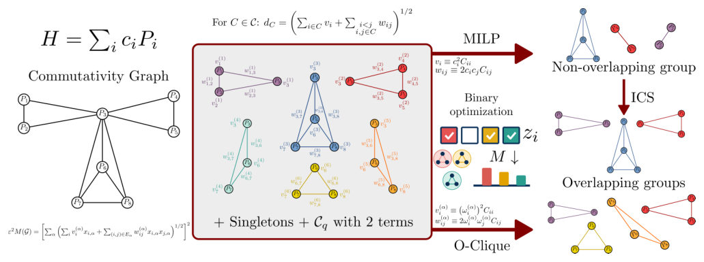
<figcaption class="paper-figure-caption"><b>Fig 1.</b> FIG. 1. Pipeline for the main algorithms proposed here. Given a Hamiltonian and its commutativity graph, we produce a set of candidate cliques C including singletons. For each clique, we calculate its contribution to the measurement cost dC using an approximate covariance dictionary. The MILP variant uses the node and edge weight definitions from Eq. 12 and produces a non-overlapping grouping. This non-overlapping result can be employed with ICS to produce an overlapping grouping. The O-Clique variant replaces the node and edge weights with their overlapping definition in Eq. 18 and employs a heuristic to initialize the weights assigned to each group, producing an overlapping measurement...</figcaption>
</figure>
<figure class="paper-figure-card">
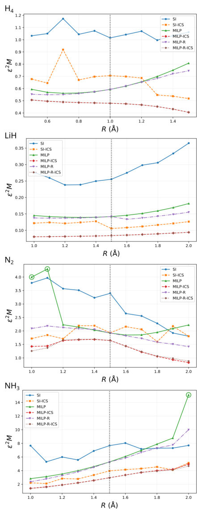
<figcaption class="paper-figure-caption"><b>Fig 2.</b> FIG. 2. Reuse of MILP-optimized groupings at different ge- ometries. We optimize the MILP grouping at a specific geom- etry (dashed vertical line) and use that grouping as the mea- surement scheme for other geometries. Approximate CISD co- variance dictionaries used during optimization; results reeval- uated for the exact ground state. Geometries with unseen Pauli operators are encircled; for those operators, we use VarSI-OR [31] to assign groups. MILP-R corresponds to the refined variant described in the text.</figcaption>
</figure>
<figure class="paper-figure-card">
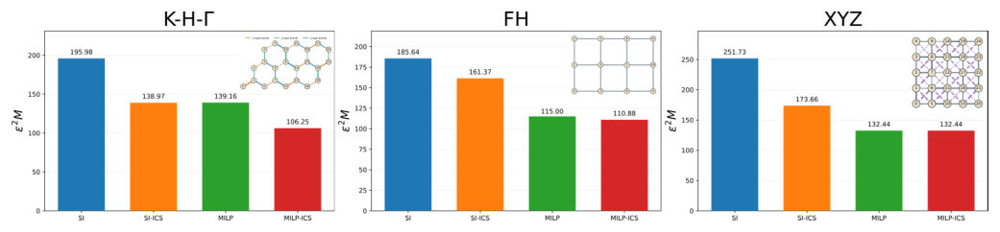
<figcaption class="paper-figure-caption"><b>Fig 3.</b> FIG. 3. Measurement cost for different lattice Hamiltonians. Comparison of the ε2M values for the measurement groupings found with SI, SI-ICS, MILP, and MILP-ICS. SI-ICS and MILP-ICS use the non-overlapping SI and MILP groups as initial- ization. We consider a Kitaev honeycomb with anisotropies, a Fermi-Hubbard model, and an XYZ model. Details on the Hamiltonians are available in Appendix E.</figcaption>
</figure>
<figure class="paper-figure-card">
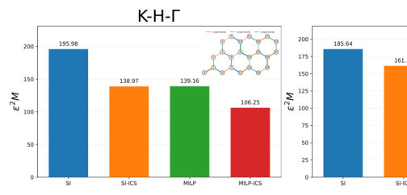
<figcaption class="paper-figure-caption"><b>Fig 4.</b> Fig. 3 shows the ε2M counts for the K–H–Γ, FH, and XYZ models considered for the SI, SI-ICS, MILP, and MILP-ICS methods. In all cases, the MILP and MILP-ICS solutions substantially outperform their corresponding SI and SI-ICS baselines. In particular, the MILP solution can even beat SI-ICS for the FH and XYZ models; for XYZ, the resulting grouping is particularly simple: grouping all X-terms in one group, all Y-terms in another, and all Z-terms in the last. We find improvement ratios for MILP-ICS against SI of R =1.84, 1.67, 1.90 for the K–H–Γ, FH, and XYZ models, respectively. The nominal measurement gains to reach 1mEh accuracy for MILP-ICS versus SI-ICS are 32.72, 50.49, and 41.22 ×106...</figcaption>
</figure>
<figure class="paper-figure-card">
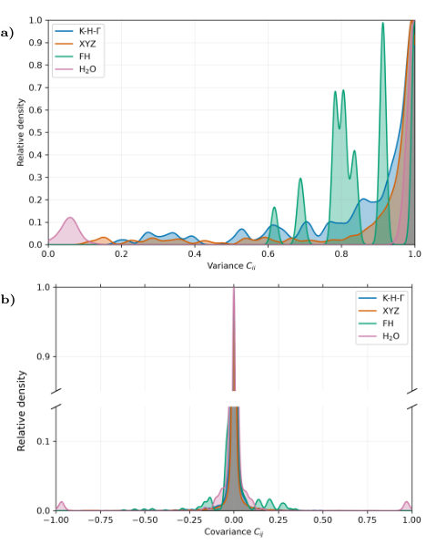
<figcaption class="paper-figure-caption"><b>Fig 5.</b> FIG. 4. Distributions of the variances and covariances for the K–H–Γ, FH, and XYZ model lattice Hamiltonians and H2O molecule qubit Hamiltonians. Each density is independently scaled to a maximum of unity. Smoothed distributions were obtained using kernel density estimation with a Gaussian ker- nel and a smoothing factor of 0.8 for the covariances and of 0.2 for the variances.</figcaption>
</figure>
</div>

<p><strong>Summary.</strong> This paper tackles the resource bottleneck in quantum energy estimation by optimizing how Pauli observables are grouped for measurement. It formulates this as a binary optimization problem, using MILP for non-overlapping groups and introducing an 'O-clique' method for overlapping supports. The results demonstrate significant, transferable reductions in required measurement repetitions across various quantum Hamiltonians.</p>
<p><strong>Why it may be interesting.</strong> This work directly addresses resource optimization in variational quantum algorithms, providing concrete, mathematically rigorous methods (MILP) to reduce the required sampling overhead for estimating ground state energies in quantum chemistry and condensed matter simulations.</p>
<details>
<summary>Detailed structure</summary>
<p><strong>Main problem.</strong> The core problem is minimizing the required number of repeated measurements for accurate quantum energy estimation, as this resource requirement can dominate computational costs.</p>
<p><strong>Main result.</strong> Variance-informed optimization techniques, particularly using Mixed-Integer Linear Programming (MILP) for non-overlapping groups, substantially reduce the measurement requirement compared to standard methods.</p>
<p><strong>Method.</strong> The authors formulate the measurement grouping problem as a classical binary optimization problem, utilizing MILP for non-overlapping sets and introducing 'O-clique' for optimizing overlapping supports.</p>
<p><strong>Model / system.</strong> The methods are benchmarked on molecular and lattice Hamiltonians, including Fermi-Hubbard, Kitaev-Heisenberg-$\Gamma$, and XYZ lattice Hamiltonians, which are represented by Pauli observables.</p>
<p><strong>Key observables.</strong> The primary metric is $\epsilon_{2M}(G)$, the required measurement repetitions, derived from minimizing the variance $S(G)$ associated with the Pauli observables.</p>
<p><strong>Important parameters / regimes.</strong> The optimization depends on node features ($v_i$, variance) and edge features ($w_{ij}$, covariance) derived from the Pauli terms.</p>
<p><strong>Assumptions / limitations.</strong> The MILP formulation is used to linearize the selection process, and the comparison separates gains from measurement-support selection versus coefficient refinement.</p>
<p><strong>Figures summary.</strong> Figure 1 illustrates the pipeline, detailing the MILP approach for non-overlapping grouping and the O-Clique method for overlapping grouping, showing how weights are adjusted.</p>
<p><strong>Paper structure.</strong> The paper develops the theoretical framework by defining the measurement cost function, proposing MILP for non-overlapping groups, extending to O-clique for overlapping groups, and finally benchmarking these optimized groupings across various lattice and molecular Hamiltonians.</p>
</details>
<details>
<summary>Abstract</summary>
<p>Repeated measurements can dominate the resources required for quantum energy estimation, making the choice of which Pauli observables to measure together a central optimization problem for variational quantum algorithms. We formulate fully commuting measurement grouping as a classical binary optimization problem based on clique selection and construct non-overlapping groups using mixed-integer linear programming (MILP). For a benchmark of molecular Hamiltonians, groupings optimized with approximate covariances reduce the non-overlapping measurement requirement $\varepsilon^2M$ by $51.8\%$ on average relative to sorted insertion (SI). Using the MILP groups to initialize iterative coefficient splitting (ICS), denoted MILP-ICS, yields an average $24.3\%$ reduction relative to ICS initialized from SI (SI-ICS). The optimized groups also transfer across nearby molecular geometries while preserving substantial measurement savings. We further introduce O-clique, which directly optimizes overlapping commuting supports through candidate-clique selection and coefficient profiles. Although O-clique provides only modest additional reductions beyond MILP-ICS, it reduces the measurement requirement by $27.3\%$ on average relative to SI-ICS with 100 iterations, despite using only five final coefficient refinement iterations, indicating improved support quality. Finally, we extend the comparison to Fermi--Hubbard, Kitaev--Heisenberg--$Γ$, and XYZ lattice Hamiltonians, where MILP-based groupings substantially outperform the corresponding SI-based strategies. Together, these results show that variance-informed optimization of measurement-group structure can substantially reduce sampling costs across molecular and lattice Hamiltonians, with optimized non-overlapping groups providing strong, transferable initializations and direct overlapping optimization offering further gains.</p>
</details>
<p><sub><a href="#top">↑ back to top</a></sub></p>

<p><a id="paper-2610.08955"></a></p>
<h3 id="from-continuum-neural-quantum-states-to-effective-lattice-models-fluctuating-wigner-molecules-in-moire-superlattices"><a href="http://arxiv.org/abs/2610.08955v1">From continuum neural quantum states to effective lattice models: Fluctuating Wigner molecules in moiré superlattices</a></h3>
<p><strong>Authors:</strong> Ahmed Khalifa, Shubhayu Chatterjee<br>
<strong>Type:</strong> theory · <strong>Category:</strong> strongly correlated electrons · <strong>PDF:</strong> <a href="https://arxiv.org/pdf/2610.08955v1">https://arxiv.org/pdf/2610.08955v1</a><br>
<strong>Analysis basis:</strong> full PDF text, analyzed in chunks
<strong>Topic relevance:</strong> <code>analog quantum simulation</code> <strong>3/5</strong> · <code>methods for driven-dissipative</code> <strong>3/5</strong></p>
<div class="figure-strip-hint">↔ Scroll figures horizontally</div>
<div class="paper-figures-scroll">
<figure class="paper-figure-card">
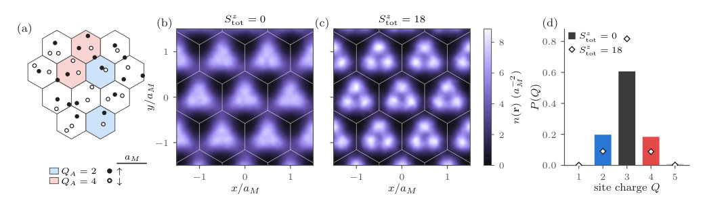
<figcaption class="paper-figure-caption"><b>Fig 1.</b> FIG. 1. Coarse-graining the neural-network wavefunction onto moir´e sites (reference point). (a) A configuration of the 36 electrons sampled from |Ψ|2 at Sz tot = 0, shown in the twelve Wigner–Seitz cells of the periodic cell; filled (open) circles denote spin-up (spin-down) electrons. Assigning each electron to its cell defines the site charges QA: shaded cells hold two (blue) or four (red) electrons, while the others hold three. The configuration is drawn at random from those with the typical number of doublons and holes, with a doublon next to each hole. (b),(c) The one-body density at Sz tot = 0 and in the fully polarized state, Sz tot = 18, on a common color scale; lines mark the...</figcaption>
</figure>
<figure class="paper-figure-card">
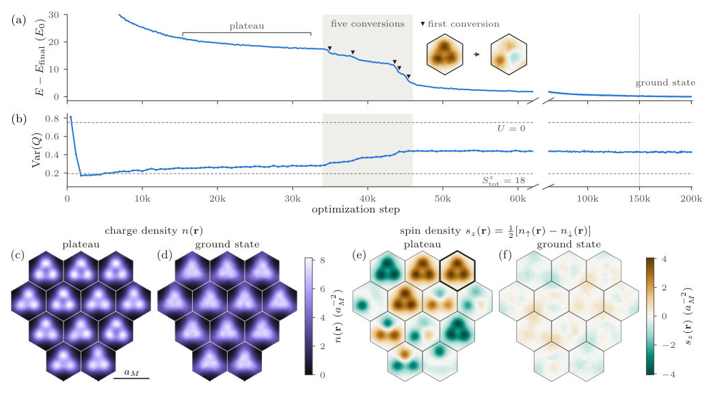
<figcaption class="paper-figure-caption"><b>Fig 2.</b> FIG. 2. Optimization of the Sz tot = 0 state at the reference point, read through the coarse-grained wavefunction at 332 checkpoints. (a) The variational energy relative to its final value (running average over 201 steps); triangles mark the conversions of the five quartets, and the bracket marks the plateau checkpoints averaged in (c) and (e). Inset: the spin density in the cell of the molecule that converts first, outlined in (e), over the four checkpoints before (steps 3.18–3.37 × 104) and after (3.49–3.68 × 104) its conversion, on the color scale of (e),(f): a quartet, ⟨Sz A⟩= 1.36, becomes a doublet, ⟨Sz A⟩= 0.45. (b) The site-charge variance, together with the non-interacting value...</figcaption>
</figure>
<figure class="paper-figure-card">
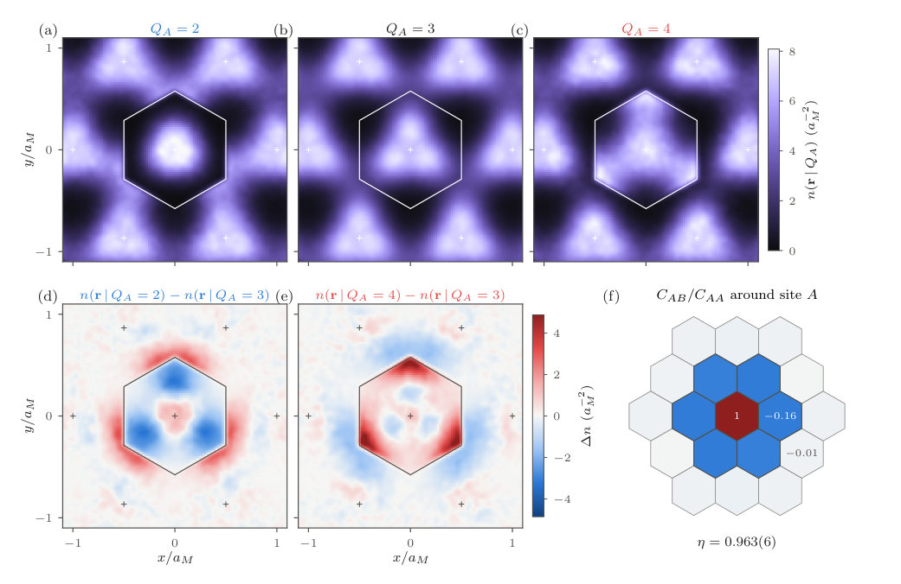
<figcaption class="paper-figure-caption"><b>Fig 3.</b> FIG. 3. The three kinds of Wigner molecule and the arrangement of the doublons and holes. (a)–(c) Density conditioned on the charge QA of the central site (Sz tot = 0, reference point), averaged over the twelve sites, which are equivalent by translation; the maps computed at each site separately are statistically identical. The hexagon marks the Wigner–Seitz cell of the central site, and crosses mark the potential minima. (d) The hole, n(r | QA = 2) −n(r | QA = 3): charge leaves the corners of the triangle (blue) and appears just outside the cell (red), on the neighbors. (e) The doublon, n(r | QA = 4) −n(r | QA = 3): the added charge sits at the corners of the triangle, while the neighbors...</figcaption>
</figure>
<figure class="paper-figure-card">
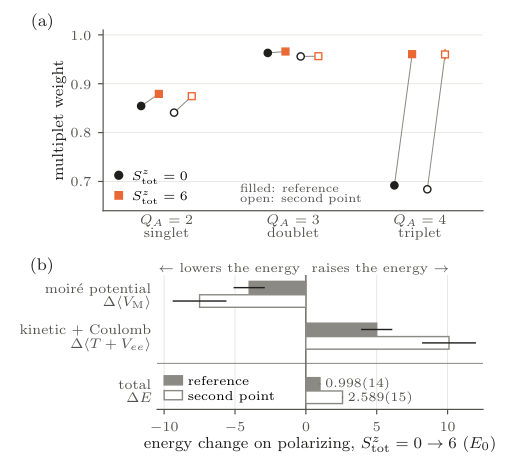
<figcaption class="paper-figure-caption"><b>Fig 4.</b> FIG. 5. Polarizing the emergent moments, Sz tot = 0 to Sz tot = 6. (a) Weight of the dominant multiplet of each kind of molecule at Sz tot = 0 (circles) and Sz tot = 6 (squares). On polarizing, the singlet weight of the hole and the doublet weight of the three-electron molecule change by at most 0.04, whereas the triplet weight of the doublon rises from 0.69 to 0.96. For the doublon at Sz tot = 6, S2 A alone does not fix the triplet weight, because four electrons can also form a quin- tet (S = 2). The quintet weight is small but not measured in this sector, and varying it between zero and its Sz tot = 0 value gives a range of triplet weights (Appendix C); the square marks the middle of this...</figcaption>
</figure>
<figure class="paper-figure-card">
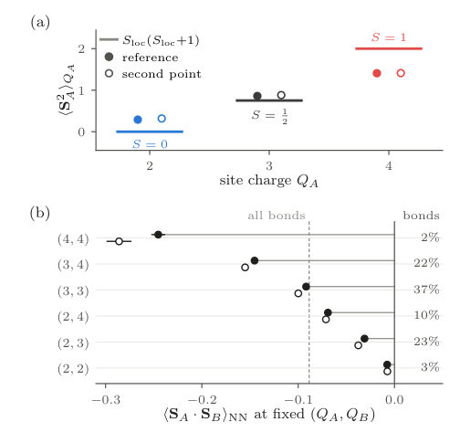
<figcaption class="paper-figure-caption"><b>Fig 5.</b> FIG. 4. Local moments and NN spin correlations set by the site charge (Sz tot = 0). (a) The local spin at fixed site charge (points), compared to Sloc(Sloc + 1) from Eq. (7) (horizontal lines). (b) The NN spin correlation resolved by the charges at the two ends of the bond. The column on the right gives the fraction of NN bonds in each class, and the dashed line indicates the average over all bonds. Filled (open) symbols denote the reference (second) point.</figcaption>
</figure>
</div>

<p><strong>Summary.</strong> This work pioneers a method using Neural Quantum States to solve the electronic structure of moiré superlattices, revealing that the true ground state is highly fluctuating and low-spin, contrary to mean-field predictions. By developing a wavefunction readout, the authors successfully bridge the gap between the complex continuum solution and a manageable effective model, specifically a two-orbital Hubbard model.</p>
<p><strong>Why it may be interesting.</strong> The methodology provides a powerful, general framework for deriving effective lattice Hamiltonians directly from complex, continuum quantum wavefunctions, which is highly relevant for understanding strongly correlated systems where simple band theory fails.</p>
<details>
<summary>Detailed structure</summary>
<p><strong>Main problem.</strong> The paper addresses the challenge of developing accurate effective low-energy descriptions for quantum materials when competing energy scales break down the standard energy hierarchy.</p>
<p><strong>Main result.</strong> The continuum Neural Quantum State (NQS) approach successfully reveals that the ground state of moiré superlattices is a low-spin state characterized by significant charge fluctuations, which necessitates an effective description via a spinful two-orbital Hubbard model.</p>
<p><strong>Method.</strong> The authors use Continuum Neural Quantum States (NQS) to solve the microscopic many-body problem directly, followed by a novel wavefunction readout technique to map the continuum state onto site-resolved charge and spin statistics.</p>
<p><strong>Model / system.</strong> The study focuses on moiré superlattices formed by semiconducting transition metal dichalcogenides (TMDs) at a specific electron filling ($
u=3$). The system is governed by a continuum Hamiltonian incorporating kinetic, lattice potential, and interaction terms.</p>
<p><strong>Key observables.</strong> Site charges ($Q_A$), site spins ($\langle S_{z_A} 
angle$), charge fluctuation variance ($   ext{Var}(Q)$), and spin correlation functions ($\langle S_A \cdot S_B 
angle$).</p>
<p><strong>Important parameters / regimes.</strong> Electron filling $
u=3$, moiré potential strength, and the comparison between mean-field ferromagnetic states and the true low-spin ground state.</p>
<p><strong>Assumptions / limitations.</strong> The primary assumption is that the effective low-energy physics can be extracted by analyzing the local statistics (charge/spin) derived from the highly accurate continuum NQS solution.</p>
<p><strong>Figures summary.</strong> Figures illustrate the coarse-graining process of the NQS wavefunction onto moiré sites, comparing charge and spin distributions between different total spin sectors (e.g., $S_{z_{tot}}=0$ vs. $S_{z_{tot}}=N_e/2$).</p>
<p><strong>Paper structure.</strong> The paper first establishes the problem of scale separation breakdown, introduces the NQS method with a readout, applies it to moiré TMDs, and systematically analyzes the resulting charge and spin correlations to derive the effective Hubbard model.</p>
</details>
<details>
<summary>Abstract</summary>
<p>Effective descriptions of quantum materials rely on a separation of energy scales that identifies their low-energy degrees of freedom. When kinetic energy, lattice potential, and interactions compete, this hierarchy breaks down, and both the microscopic state and its effective description are unknown. Continuum neural quantum states (NQS) can find the ground state directly without projecting onto prescribed bands, orbitals, or spins, but their microscopic wavefunctions are difficult to interpret in terms of effective variables. Here, we introduce a wavefunction readout that maps the continuum NQS onto site-resolved charge and spin statistics, allowing effective degrees of freedom to emerge from the microscopic solution. Focusing on moiré transition metal dichalcogenides at filling $ν= 3$, the NQS reveals a low-spin ground state below the ferromagnetic crystal of spin-polarized Wigner molecules. Although the charge density retains triangular molecular motifs, our readout reveals significant charge fluctuations through bound nearest-neighbor doublon--hole pairs. Each molecular charge state has an inert spin-singlet core and rim electrons that carry the spin. Charge and spin fluctuations are therefore intertwined, with antiferromagnetic spin-correlations between sites, motivating an effective description by a spinful two-orbital Hubbard model. More generally, our results demonstrate a route from continuum wavefunctions to effective lattice models when competing scales preclude a controlled reduction.</p>
</details>
<p><sub><a href="#top">↑ back to top</a></sub></p>

<p><a id="paper-2610.10427"></a></p>
<h3 id="design-time-conformance-checking-for-pulse-level-quantum-control"><a href="http://arxiv.org/abs/2610.10427v1">Design-Time Conformance Checking for Pulse-Level Quantum Control</a></h3>
<p><strong>Authors:</strong> Rylan Malarchick<br>
<strong>Type:</strong> experiment · <strong>Category:</strong> quantum information and computing · <strong>PDF:</strong> <a href="https://arxiv.org/pdf/2610.10427v1">https://arxiv.org/pdf/2610.10427v1</a><br>
<strong>Analysis basis:</strong> full PDF text, analyzed in chunks
<strong>Topic relevance:</strong> <code>QC/QI experiment</code> <strong>3/5</strong> · <code>quantum measurements</code> <strong>2/5</strong></p>
<div class="figure-strip-hint">↔ Scroll figures horizontally</div>
<div class="paper-figures-scroll">
<figure class="paper-figure-card">
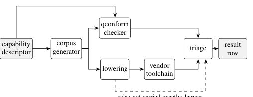
<figcaption class="paper-figure-caption"><b>Fig 1.</b> Fig. 1. The differential loop. The generator derives programs from the descriptor, the checker and the vendor toolchain each answer, and triage dispositions every row. A value the lowering cannot carry exactly is attributed to the harness, not counted as agreement or disagreement.</figcaption>
</figure>
</div>

<p><strong>Summary.</strong> This paper introduces qconform, a formal checker designed to verify if a quantum pulse control program is physically realizable on a quantum device. It achieves this by comparing the program against a versioned capability descriptor, using exact arithmetic to avoid floating-point errors. The evaluation demonstrates that the checker successfully catches discrepancies between different versions of vendor toolchains.</p>
<p><strong>Why it may be interesting.</strong> This work provides a rigorous, formal verification layer for quantum control sequences, which is crucial for moving quantum algorithms from simulation to reliable hardware implementation.</p>
<details>
<summary>Detailed structure</summary>
<p><strong>Main problem.</strong> The core problem is ensuring that a pulse-level quantum control program is physically realizable on a target quantum device, as vendor documentation often fails to capture all operational constraints.</p>
<p><strong>Main result.</strong> The proposed checker, qconform, successfully accepted no program that the vendor toolchains refused during extensive differential testing, identifying discrepancies between toolchain versions.</p>
<p><strong>Method.</strong> The authors developed qconform, a design-time, offline checker that verifies a pulse program against a versioned capability descriptor using exact rational arithmetic.</p>
<p><strong>Model / system.</strong> The work focuses on pulse-level quantum control for superconducting qubits, using vendor toolchains like QICK and Qblox to define the operational constraints of the physical hardware.</p>
<p><strong>Key observables.</strong> The checker reports a verdict, the specific rules applied, and a coverage manifest detailing what was not checked.</p>
<p><strong>Important parameters / regimes.</strong> Device constraints include minimum pulse length, timing grid, frequency band, and amplitude resolution, all defined using exact rational numbers.</p>
<p><strong>Assumptions / limitations.</strong> The checker does not decide the converse (it might reject a program the toolchain accepts), nor does it cover run-time behavior or data-dependent control flow.</p>
<p><strong>Figures summary.</strong> The notes mention a differential loop diagram illustrating the flow from program generation to vendor toolchain testing, and tables summarizing differential results and defects found.</p>
<p><strong>Paper structure.</strong> The paper introduces the problem of hardware constraint verification, details the qconform checker and its descriptor format, presents the methodology using differential testing against QICK and Qblox, and concludes with evaluation results and identified limitations.</p>
</details>
<details>
<summary>Abstract</summary>
<p>A pulse-level quantum control program is written against a device whose limits are recorded, if at all, in vendor documentation and source code. A program that exceeds them can be refused at compile time. It can also be accepted and silently altered, or compile and then fail at the board. In the last two cases the experiment runs, and the data does not correspond to the program that was written. We present qconform, a checker that decides whether a pulse program is realizable on a device, given a versioned capability descriptor for that device. Every constraint in a descriptor cites the toolchain observation that established it. The checker is design-time, offline, and deterministic, and it uses no floating point. It reports a verdict, the rules it applied, and a coverage manifest that names what it did not check. We evaluate qconform by differential testing against the QICK and Qblox toolchains, on three QICK board configurations and one Qblox cluster. Over 1263 program runs of 969 distinct programs, the checker accepted no program that a toolchain refuses. On both vendors, a descriptor pinned to one toolchain release accepts programs that older releases refuse. The evaluation also found ten defects in the checker and its descriptors, all fixed.</p>
</details>
<p><sub><a href="#top">↑ back to top</a></sub></p>

<p><a id="paper-2610.09258"></a></p>
<h3 id="vertex-crossings-in-a-symmetric-markov-multinomial-model"><a href="http://arxiv.org/abs/2610.09258v1">Vertex crossings in a symmetric Markov multinomial model</a></h3>
<p><strong>Authors:</strong> Arjun Pemmasani<br>
<strong>Type:</strong> theory · <strong>Category:</strong> statistical mechanics · <strong>PDF:</strong> <a href="https://arxiv.org/pdf/2610.09258v1">https://arxiv.org/pdf/2610.09258v1</a><br>
<strong>Analysis basis:</strong> full PDF text, analyzed in chunks
<strong>Topic relevance:</strong> <code>non-equilibrium universality</code> <strong>3/5</strong> · <code>Keldysh / 2PI / non-Gaussian methods</code> <strong>2/5</strong></p>
<div class="figure-strip-hint">↔ Scroll figures horizontally</div>
<div class="paper-figures-scroll">
<figure class="paper-figure-card">
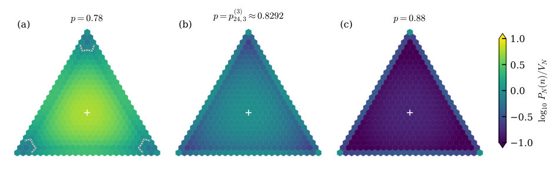
<figcaption class="paper-figure-caption"><b>Fig 1.</b> Figure 1: The ratio PN(n)/VN for d = 3 and N = 24, one hexagon per bin, on a log10 scale. (a) At p = 0.78 only the 21 bins inside the dashed curves near the vertices are below the vertex height. (b) At the full-center crossing p(3) 24,3 = 0.82921 . . . the center (8, 8, 8) (cross) ties with the vertices and every other bin is below them. (c) At p = 0.88 every nonvertex bin is below the vertex height.</figcaption>
</figure>
<figure class="paper-figure-card">
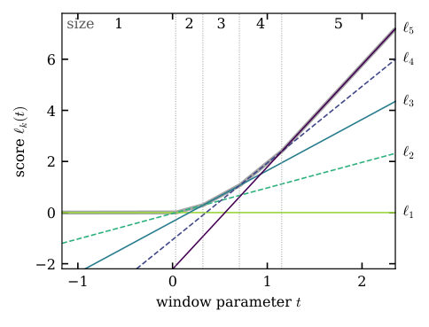
<figcaption class="paper-figure-caption"><b>Fig 2.</b> Figure 2: The lines (11) for d = 5 and hi = −(i −1)2. The gray band is their upper envelope. The dotted lines are t1 &lt; · · · &lt; t4, and the number at the top of each interval is the size k of the winning support {1, . . . , k}.</figcaption>
</figure>
</div>

<p><strong>Summary.</strong> This theoretical paper analyzes the probability distribution of counts in a Markov multinomial model, simulating a ball on a generalized Galton board. It determines the precise conditions under which the most probable outcome shifts from being concentrated at the corners (vertices) of the simplex to the center. The work uses advanced asymptotic analysis to show this transition occurs predictably as the system size increases.</p>
<p><strong>Why it may be interesting.</strong> The mathematical machinery used—analyzing phase transitions in high-dimensional probability distributions—is highly relevant to understanding critical phenomena and equilibrium states in complex many-body systems.</p>
<details>
<summary>Detailed structure</summary>
<p><strong>Main problem.</strong> The paper investigates the crossover point in a symmetric Markov multinomial model where the most likely outcome (bin) shifts from being near the vertices (corners) of the simplex to the center.</p>
<p><strong>Main result.</strong> For large systems, the most likely bin transitions from the vertices directly to the center as the expected number of turns grows to a fixed multiple of the logarithm of the steps.</p>
<p><strong>Method.</strong> The analysis employs advanced asymptotic techniques, including second-order analysis, generating functions, and saddle-point approximations to compare the probability of interior points against those at the vertices.</p>
<p><strong>Model / system.</strong> The model is a ball bouncing down a generalized Galton board, modeled as a Markov chain. The observable is the count vector $\mathbf{n}$ of directions used over $N$ steps, which resides on a $d$-dimensional simplex.</p>
<p><strong>Key observables.</strong> The probability distribution of the count vector $\mathbf{n}$, the ratio of the probability of an interior bin to the probability of a vertex ($P_{\mu}^N(n)/V_N$), and the crossing point $p_{N,k}$.</p>
<p><strong>Important parameters / regimes.</strong> The number of steps $N$, the dimension $d$, the expected number of turns $T$, and the logarithmic scale $L = \log N$.</p>
<p><strong>Assumptions / limitations.</strong> The results are asymptotic, valid for large $N$, and the analysis often relies on specific scaling regimes for the parameters (e.g., $T$ growing proportionally to $L$).</p>
<p><strong>Figures summary.</strong> Figure 1 illustrates the crossover behavior on a triangle ($d=3$) at $N=24$, showing the ratio $P_N(n)/V_N$ crossing a threshold.</p>
<p><strong>Paper structure.</strong> The paper builds from first-order analysis (suggesting simultaneous crossing) to a second-order analysis to break ties, establishing explicit asymptotic formulas for the crossing time $T_{N,k}$ and proving the general transition from vertices to the center.</p>
</details>
<details>
<summary>Abstract</summary>
<p>We observe a ball bouncing down a Galton board with any number of directions. At each peg it either keeps its direction with some fixed probability or randomly turns to one of the other directions. Its bin measures how often it went each way, a point of a simplex. When the ball rarely turns, the most likely bins are the corners, which only a ball that never turns can reach. We ask when the best bin of each face of the simplex becomes as likely as a corner. To first order every face catches up at the same moment. We break this tie at second order, with an explicit constant for each face. Hence on a long board, as the expected number of turns grows to any fixed multiple of the length's logarithm, the most likely bin jumps once, from the corners straight to the center. A nonuniform start or a weak external field changes the constants, potentially allowing an intermediate face to win.</p>
</details>
<p><sub><a href="#top">↑ back to top</a></sub></p>

<p><a id="paper-2610.08921"></a></p>
<h3 id="exact-solutions-for-kinematics-across-interaction-deformed-fermi-surfaces"><a href="http://arxiv.org/abs/2610.08921v1">Exact solutions for kinematics across interaction-deformed Fermi surfaces</a></h3>
<p><strong>Authors:</strong> Alexander Kruchkov, F. Duncan M. Haldane<br>
<strong>Type:</strong> theory · <strong>Category:</strong> strongly correlated electrons · <strong>PDF:</strong> <a href="https://arxiv.org/pdf/2610.08921v1">https://arxiv.org/pdf/2610.08921v1</a><br>
<strong>Analysis basis:</strong> full PDF text, analyzed in chunks
<strong>Topic relevance:</strong> <code>Keldysh / 2PI / non-Gaussian methods</code> <strong>3/5</strong> · <code>methods for driven-dissipative</code> <strong>1/5</strong></p>
<div class="figure-strip-hint">↔ Scroll figures horizontally</div>
<div class="paper-figures-scroll">
<figure class="paper-figure-card">
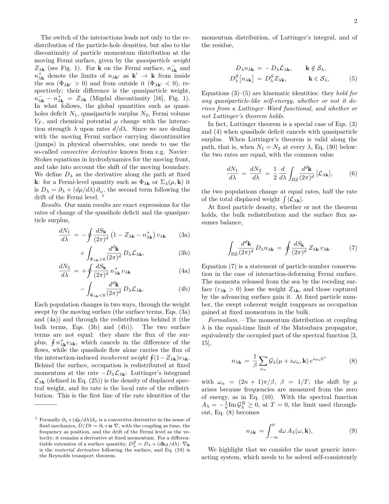
<figcaption class="paper-figure-caption"><b>Fig 1.</b> Low-resolution page preview, page 2</figcaption>
</figure>
<figure class="paper-figure-card">
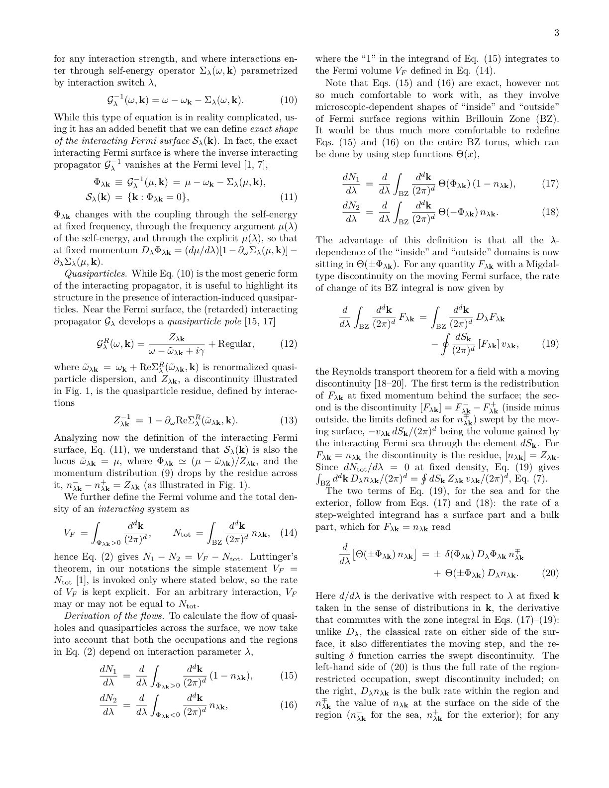
<figcaption class="paper-figure-caption"><b>Fig 2.</b> Low-resolution page preview, page 3</figcaption>
</figure>
<figure class="paper-figure-card">
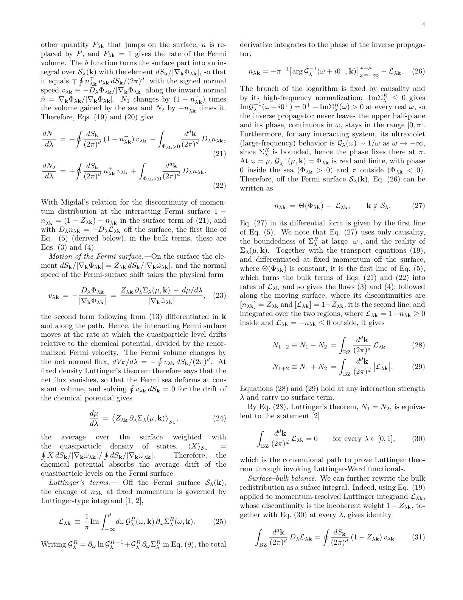
<figcaption class="paper-figure-caption"><b>Fig 3.</b> Low-resolution page preview, page 4</figcaption>
</figure>
<figure class="paper-figure-card">
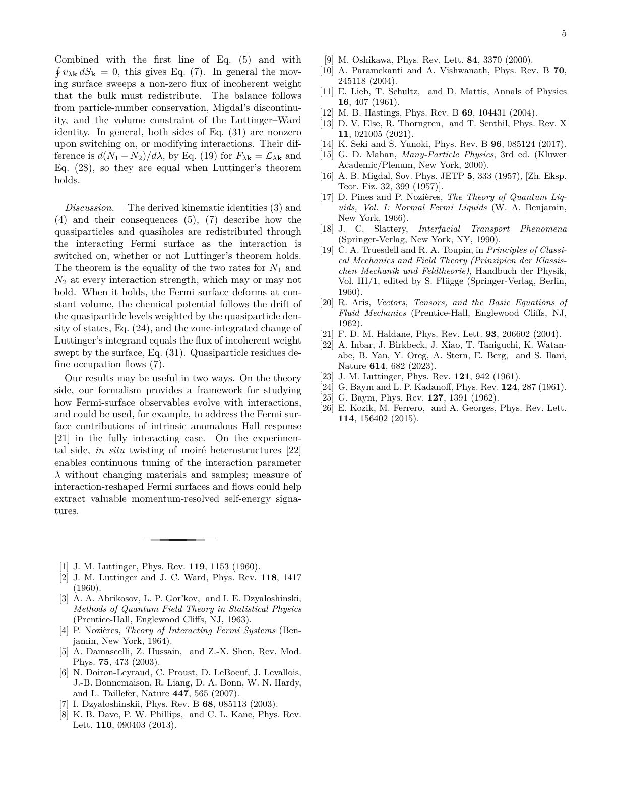
<figcaption class="paper-figure-caption"><b>Fig 4.</b> Low-resolution page preview, page 5</figcaption>
</figure>
<figure class="paper-figure-card">
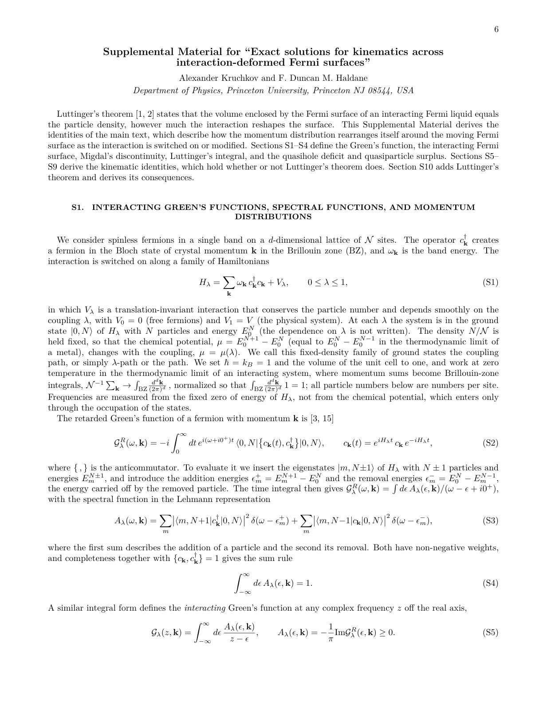
<figcaption class="paper-figure-caption"><b>Fig 5.</b> Low-resolution page preview, page 6</figcaption>
</figure>
</div>

<p><strong>Summary.</strong> This theoretical work derives exact rate equations governing the redistribution of quasiparticle weight across an interaction-deformed Fermi surface. By tracking the change in particle deficit and surplus populations as interactions are turned on, the authors establish fundamental kinematic identities. These results provide a robust, general framework for studying spectral function evolution in strongly correlated electron systems.</p>
<p><strong>Why it may be interesting.</strong> The rigorous derivation of these kinematic identities provides a powerful, general framework for understanding how spectral weight and particle distribution evolve in strongly correlated systems, independent of specific approximations like the Luttinger theorem itself.</p>
<details>
<summary>Detailed structure</summary>
<p><strong>Main problem.</strong> The paper derives exact kinematic identities describing how the occupation deficit inside and surplus outside the Fermi surface change when interactions are switched on at fixed particle density.</p>
<p><strong>Main result.</strong> It establishes rate equations for these populations, showing that when Luttinger's theorem holds, the rates of change for the deficit and surplus are equal, balancing surface flux with bulk redistribution.</p>
<p><strong>Method.</strong> The analysis uses a continuum of interaction parameters ($\lambda$) and applies transport theorems (like the Reynolds theorem) to derive continuity equations for the occupation numbers and the Luttinger integrand.</p>
<p><strong>Model / system.</strong> The system is spinless fermions on a lattice in $d$ dimensions at zero temperature, modeled by tracking the evolution of the interacting Green's function and self-energy as an interaction parameter $\lambda$ is varied.</p>
<p><strong>Key observables.</strong> Quasiparticle weight ($Z_{\lambda k}$), occupation deficit ($N_1$), quasiparticle surplus ($N_2$), and the Luttinger integrand ($L_{\lambda k}$).</p>
<p><strong>Important parameters / regimes.</strong> Interaction switch parameter ($\lambda$), Fermi momentum ($k_F$), and chemical potential ($\mu$).</p>
<p><strong>Assumptions / limitations.</strong> The derivations rely on the existence of a quasiparticle pole and the application of transport theorems across moving discontinuities; some results require assumptions related to functional invariance.</p>
<p><strong>Figures summary.</strong> Figure 1 illustrates the momentum distribution $n_{\lambda k}$ along a line through the Fermi sea, comparing free and interacting fermion cases.</p>
<p><strong>Paper structure.</strong> The paper develops the formalism by defining the populations ($N_1, N_2$), deriving the rate equations using transport theorems, establishing conservation laws, and finally relating these rates to the Luttinger integrand to confirm the kinematic identities.</p>
</details>
<details>
<summary>Abstract</summary>
<p>Luttinger's theorem fixes the volume of the Fermi sea of a Fermi liquid, but not how interactions redistribute occupation around its surface. For an interaction switched on and tuned at fixed density, we derive the exact rates of change of the occupation deficit inside the interacting Fermi surface and of the surplus outside it. Each is the weight swept by the deforming surface plus a change of Luttinger's integrand at fixed momentum; the difference of the surface terms is flux of incoherent weight $1 - Z_{\vec k}$. These identities hold with or without the Luttinger theorem.</p>
</details>
<p><sub><a href="#top">↑ back to top</a></sub></p>

<p><a id="paper-2610.10351"></a></p>
<h3 id="measurement-efficient-differentiable-quantum-architecture-search-for-combinatorial-optimization"><a href="http://arxiv.org/abs/2610.10351v1">Measurement-Efficient Differentiable Quantum Architecture Search for Combinatorial Optimization</a></h3>
<p><strong>Authors:</strong> Lukas Theißinger, Thore Gerlach, Christian Bauckhage<br>
<strong>Type:</strong> experiment · <strong>Category:</strong> quantum information and computing · <strong>PDF:</strong> <a href="https://arxiv.org/pdf/2610.10351v1">https://arxiv.org/pdf/2610.10351v1</a><br>
<strong>Analysis basis:</strong> full PDF text, analyzed in chunks
<strong>Topic relevance:</strong> <code>quantum measurements</code> <strong>3/5</strong> · <code>QC/QI experiment</code> <strong>1/5</strong></p>
<div class="figure-strip-hint">↔ Scroll figures horizontally</div>
<div class="paper-figures-scroll">
<figure class="paper-figure-card">
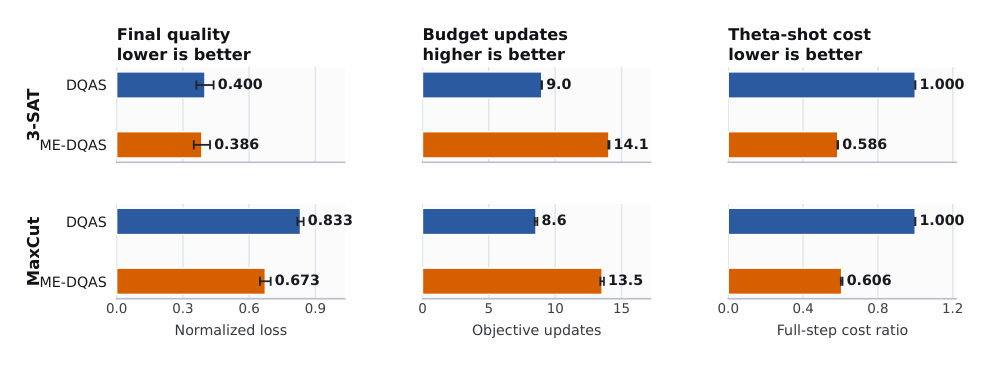
<figcaption class="paper-figure-caption"><b>Fig 1.</b> Fig. 1. Main experimental result for 100 matched 3-SAT instances and 100 matched MaxCut instances. Each row compares baseline DQAS with ME-DQAS under the same global shot budget. Bars show means with 95% confidence intervals. The three panels measure final solution quality, how many DQAS updates fit into the budget and the requested full θ-gradient shot cost relative to baseline parameter shift.</figcaption>
</figure>
<figure class="paper-figure-card">
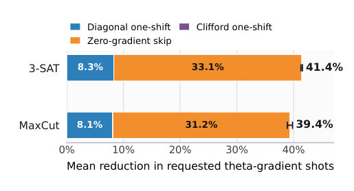
<figcaption class="paper-figure-caption"><b>Fig 2.</b> Fig. 2. Source of the requested full θ-shot reduction in fig. 1. The dominant contribution comes from gradients that are certified to be exactly zero; the diagonal one-shift rule gives the next largest contribution. The Clifford-suffix branch is negligible for this gate set.</figcaption>
</figure>
</div>

<p><strong>Summary.</strong> This paper introduces a Measurement-Efficient Differentiable Quantum Architecture Search (ME-DQAS) framework for optimizing quantum circuits used in combinatorial problems. By exploiting the structural properties of the cost Hamiltonian and circuit, the authors derive a method that significantly reduces the number of required quantum measurements for gradient estimation. This lowers the practical overhead, making DQAS more feasible for current quantum hardware.</p>
<p><strong>Why it may be interesting.</strong> This work directly addresses the practical hardware limitations of quantum machine learning algorithms by providing a concrete, theoretically derived method to reduce the required quantum measurement budget for gradient estimation.</p>
<details>
<summary>Detailed structure</summary>
<p><strong>Main problem.</strong> The primary challenge addressed is the high measurement cost associated with Differentiable Quantum Architecture Search (DQAS) when applying variational quantum algorithms to combinatorial optimization.</p>
<p><strong>Main result.</strong> The authors propose a measurement-efficient scheme that reduces the required gradient measurement cost by 39% to 41% compared to standard two-shift estimates on benchmark problems like 3-SAT and MaxCut.</p>
<p><strong>Method.</strong> They derive and implement a measurement-saving gradient estimator that exploits the diagonal structure of the cost Hamiltonian and the structure of the quantum circuit suffix to replace standard two-shift rules with one-shift or zero-measurement estimates.</p>
<p><strong>Model / system.</strong> The work uses parameterized quantum circuits $U(	heta)$ to estimate an objective function $F(	heta) = \langle 0|U(	heta)^\dagger H_f U(	heta)|0
angle$, where $H_f$ is a diagonal cost Hamiltonian derived from combinatorial problems like 3-SAT or MaxCut.</p>
<p><strong>Key observables.</strong> Normalized loss (objective function value), number of DQAS updates, and the requested $    heta$-gradient shot cost.</p>
<p><strong>Important parameters / regimes.</strong> The reduction factor (39%-41%), the gate parameterization type (rotational), and the structure of the Hamiltonian (diagonal in the computational basis).</p>
<p><strong>Assumptions / limitations.</strong> The method assumes the cost Hamiltonian $H_f$ is diagonal in the computational basis and that the circuit suffix possesses structural properties (e.g., Clifford or commuting) that allow for the gradient simplification.</p>
<p><strong>Figures summary.</strong> Figure 1 compares DQAS vs. ME-DQAS across final quality, objective updates, and $  heta$-gradient shot cost ratio for 3-SAT and MaxCut, showing ME-DQAS superiority. Figure 2 quantifies the source of cost reduction via zero-gradient and one-shift rules.</p>
<p><strong>Paper structure.</strong> The paper first establishes the bottleneck in DQAS gradient estimation. It then theoretically derives the measurement-saving gradient estimator based on structural properties. Finally, it validates the approach experimentally on 3-SAT and MaxCut, comparing performance metrics against the standard DQAS baseline.</p>
</details>
<details>
<summary>Abstract</summary>
<p>Differentiable quantum architecture search (DQAS) is a promising framework for the automated design of quantum circuits, particularly for variational quantum optimization algorithms. However, its practical deployment on quantum hardware is limited by the large number of circuit measurements required during optimization, making hardware execution costly. In this work, we show that for a broad class of combinatorial optimization problems and commonly used rotational gate parameterizations, the measurement cost of DQAS can be significantly reduced without changing the optimization objective. We derive the proposed measurement reduction scheme theoretically and validate it experimentally on 3-SAT and MaxCut benchmark problems. Our approach reduces the requested gradient measurement cost by about 39 to 41% while introducing only negligible classical post-processing overhead, lowering the practical cost of executing DQAS on quantum hardware.</p>
</details>
<p><sub><a href="#top">↑ back to top</a></sub></p>

<p><a id="paper-2610.10175"></a></p>
<h3 id="quantum-vortex-excitons-beyond-band-topology"><a href="http://arxiv.org/abs/2610.10175v1">Quantum-vortex excitons beyond band topology</a></h3>
<p><strong>Authors:</strong> Jin-Hyung Choi, Sang-Hoon Han, Young-Kwon Han, Jun-Won Rhim, Sun-Woo Kim, Joshua J. P. Thompson<br>
<strong>Type:</strong> theory · <strong>Category:</strong> strongly correlated electrons · <strong>PDF:</strong> <a href="https://arxiv.org/pdf/2610.10175v1">https://arxiv.org/pdf/2610.10175v1</a><br>
<strong>Analysis basis:</strong> full PDF text, analyzed in chunks
<strong>Topic relevance:</strong> <code>analog quantum simulation</code> <strong>3/5</strong> · <code>interference shaping light</code> <strong>1/5</strong></p>
<div class="figure-strip-hint">↔ Scroll figures horizontally</div>
<div class="paper-figures-scroll">
<figure class="paper-figure-card">
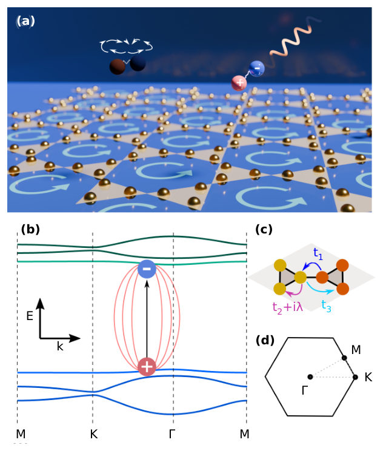
<figcaption class="paper-figure-caption"><b>Fig 1.</b> Figure 1: Quantum-vortex excitons in flat Chern bands: a Yin–Yang kagome realization. (a) Schematic illustration of bright and dark excitons above the lattice (gold). The light red and blue pair represents a bright exciton coupled to light (orange wave), and the dark red and blue pair represents a dark exciton. The arrows illustrate the vortex phase structure. Optical activity depends on the relative phase structure of the exciton wavefunction and the interband optical matrix element. (b) Schematic electronic band structure along a high-symmetry path, with the electron and hole in the nearly flat conduction and valence bands. (c) Tight-binding model and the hopping and spin–orbit couplings...</figcaption>
</figure>
<figure class="paper-figure-card">
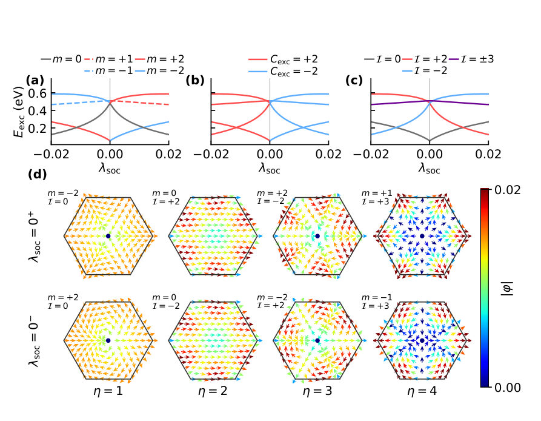
<figcaption class="paper-figure-caption"><b>Fig 2.</b> Figure 2: Exciton spectrum and relative winding sectors. (a)–(c) The same energy spectrum E(η) versus spin–orbit coupling λsoc, labelled by (a) coefficient winding m, (b) the common band background Cexc = Cc −Cv, and (c) the relative index I = [m −Cexc]6. Here Cexc = +2 at negative SOC and −2 at positive SOC. The SOC axes are in eV. Displayed winding labels are reduced modulo six, whereas table I gives the integer windings. (d) The first four wavefunctions, in increasing energy order, at λsoc = +10−5 eV (top) and −10−5 eV (bottom). Arrow direction and colour encode arg φ(η)</figcaption>
</figure>
<figure class="paper-figure-card">
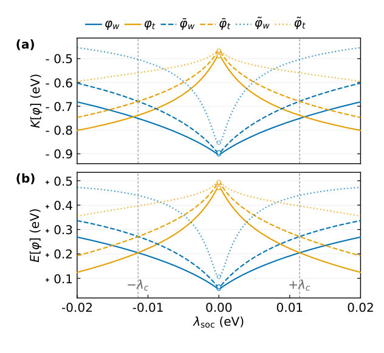
<figcaption class="paper-figure-caption"><b>Fig 3.</b> Figure 3: Phase-preserving amplitude controls. (a) Interaction energy K[φ] and (b) total energy E[φ] versus SOC. Blue (w) denotes the Chern-locked sector (I = 0), whereas orange (t) denotes the zero-winding sector (I = +2 at positive SOC and −2 at negative SOC). Solid curves show native eigenstates φ. Dashed ( ¯φ) and dotted ( ˜φ) curves show normalized trials with constant amplitudes and amplitudes taken from the selected state in the other sector, respectively, while retaining the native phases. Trial energies are expectation values, not additional eigenvalues. Gray vertical lines mark the native crossings at ±λc. Open circles at zero SOC average the nearest nonzero- SOC samples.</figcaption>
</figure>
<figure class="paper-figure-card">
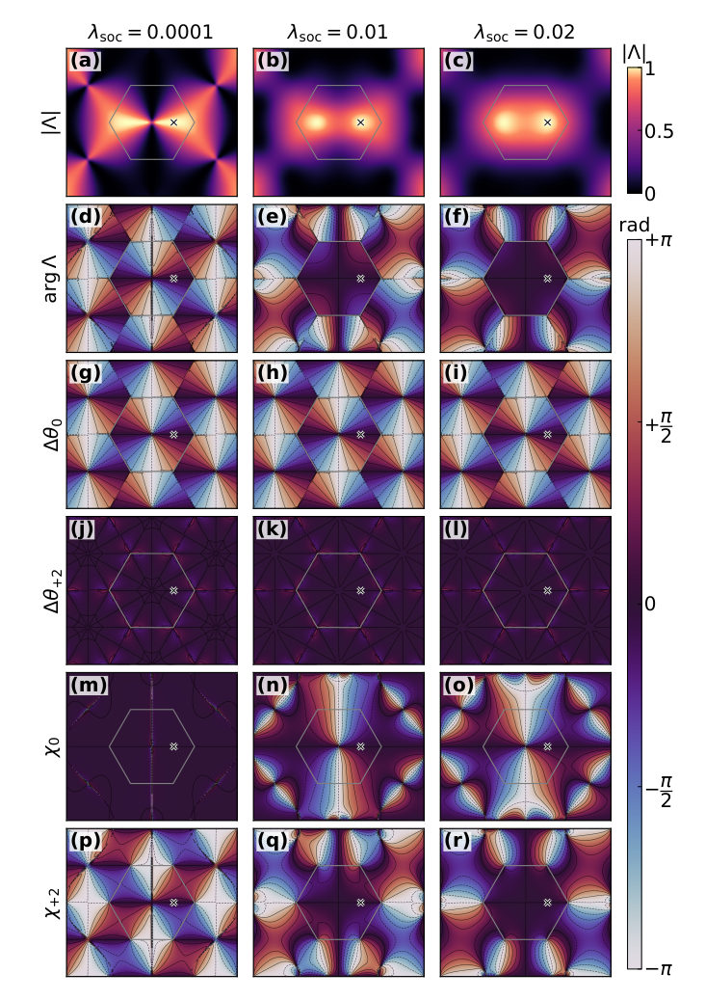
<figcaption class="paper-figure-caption"><b>Fig 4.</b> Figure 4: Phase matching at fixed band topology. Columns show λsoc = +0.0001, +0.01 and +0.02 eV, with Cexc = −2 throughout. The target momentum k′ varies at fixed source a0k = (1.0771, 0) (cross). Grey hexagons mark the FBZ. Panels (a)–(c) show the form-factor mag- nitude |Λ|. Panels (d)–(f) show the form-factor phase Arg Λ. Panels (g)–(i) and (j)–(l) show the relative coefficient phases ∆θ0 and ∆θ+2, respectively. Panels (m)–(o) and (p)–(r) show the com- bined interaction phases χ0 and χ+2, respectively. The selected state in the I = 0 sector is Chern locked, whereas I = +2 has zero coefficient winding at positive SOC. Separate phases depend on the Bloch frame, whereas their combination in...</figcaption>
</figure>
<figure class="paper-figure-card">
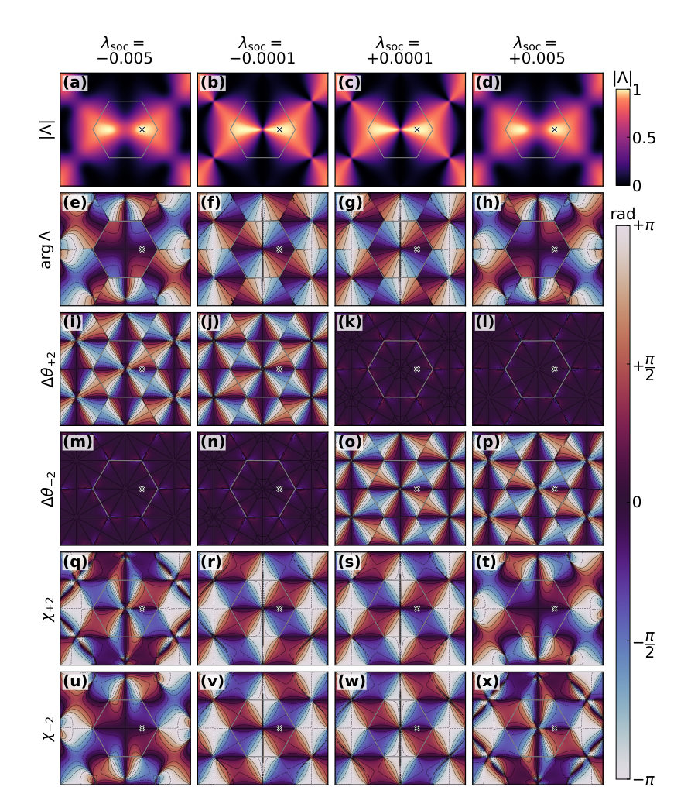
<figcaption class="paper-figure-caption"><b>Fig 5.</b> Figure 5: Relative interaction phases across SOC reversal. Columns show λsoc = −0.005, −0.0001, +0.0001 and +0.005 eV. The fixed source is a0k = (1.0771, 0) (cross), and grey hexagons mark the FBZ. (a)–(d) show the form-factor magnitude |Λ|. (e)–(h) show the form-factor phase Arg Λ. (i)–(l) and (m)–(p) show the relative coefficient phases ∆θ+2 and ∆θ−2, respectively. (q)–(t) and (u)–(x) show the combined interaction phases χ+2 and χ−2, respectively. The latter retain similar patterns within the same relative sector across small SOC reversal: compare panels (r) and (s) for +2, and (v) and (w) for −2. Subscripts denote the relative classes of section II on the nonzero- SOC sides. Phase and...</figcaption>
</figure>
</div>

<p><strong>Summary.</strong> This theoretical study investigates exciton binding in flat Chern bands using a kagome lattice model. It demonstrates that the Coulomb interaction's phase matching stabilizes quantum-vortex excitons, causing a topological transition as spin-orbit coupling increases. This reordering is predicted to manifest as a distinct change in the material's optical absorption spectrum.</p>
<p><strong>Why it may be interesting.</strong> The work provides a microscopic link between exciton topology, Coulomb binding energy, and optical response, showing that phase effects beyond simple band Chern numbers dictate the ground state, which is highly relevant for designing novel quantum emitters.</p>
<details>
<summary>Detailed structure</summary>
<p><strong>Main problem.</strong> The paper aims to explain how Coulomb phase matching stabilizes a quantum-vortex exciton as the lowest bound state in flat Chern bands, extending understanding beyond the underlying electronic band Chern numbers.</p>
<p><strong>Main result.</strong> Increasing spin-orbit coupling drives a transition of the lowest exciton from a quantum-vortex state to a zero-winding state, which is observable as a transition from a dark vortex exciton to a bright zero-winding exciton in the optical spectrum.</p>
<p><strong>Method.</strong> The analysis uses a projected electron-hole formulation, calculating total energy by minimizing the sum of kinetic and Coulomb interaction energies, while isolating the phase contribution to the binding energy.</p>
<p><strong>Model / system.</strong> The study uses a prototypical Yin–Yang kagome lattice to model excitons (bound electron-hole pairs) in a setting exhibiting flat Chern bands and spin-orbit coupling.</p>
<p><strong>Key observables.</strong> Exciton topology (classified by winding number relative to Chern-number difference), total energy $E(\eta)$, and circularly polarized optical absorption spectra $\epsilon_{\sigma}(E_\gamma)$.</p>
<p><strong>Important parameters / regimes.</strong> Spin-orbit coupling ($\lambda_{soc}$), the lattice structure (Yin–Yang kagome), and the exciton wavefunction phase winding.</p>
<p><strong>Assumptions / limitations.</strong> The analysis assumes the Bloch-overlap geometry is relevant for binding, and later sections test the failure of local approximations to capture the full nonlocal momentum-pair contributions to the energy ordering.</p>
<p><strong>Figures summary.</strong> Figures illustrate the kagome lattice realization, the exciton energy spectrum $E(\eta)$ vs. $\lambda_{soc}$ showing winding sectors, and comparisons between native eigenstates and amplitude-controlled trials showing phase vortex structures.</p>
<p><strong>Paper structure.</strong> The paper progresses by first establishing the physical model and the role of Coulomb phase matching in stabilizing vortex excitons. It then uses topological indices to track competing states and demonstrates the reordering via energy minimization. Finally, it connects this reordering to measurable optical selection rules.</p>
</details>
<details>
<summary>Abstract</summary>
<p>Optically exciting a typical low-dimensional semiconductor produces a nodeless \(s\)-type exciton as its lowest-energy bound state. Here, we explain how Coulomb phase matching stabilises a quantum-vortex exciton as the lowest bound state in flat Chern bands. Using a prototypical Yin--Yang kagome lattice, we demonstrate that increasing the spin--orbit coupling drives a transition of the lowest exciton from a quantum-vortex state to a zero-winding state, while leaving the band Chern numbers unchanged. We trace this behaviour to a gauge-invariant combination of exciton phase differences and Bloch-overlap phases that can reduce the Coulomb energy. By comparing states with identical wavefunction amplitudes, we isolate this phase contribution and show that it is sufficient to drive the reversal in exciton ordering. We classify exciton topology by the momentum-space wavefunction winding relative to the conduction--valence Chern-number difference,connecting the competing states to circular-polarisation selection rules. We then show that the resulting reordering can be tracked directly in the optical absorption spectrum, through the transition from a dark vortex exciton to a bright zero-winding exciton. These findings establish a microscopic link between exciton topology, Coulomb binding, and optical response that extends beyond the information contained in the underlying electronic band Chern numbers.</p>
</details>
<p><sub><a href="#top">↑ back to top</a></sub></p>

<p><a id="paper-2610.10004"></a></p>
<h3 id="causal-confusion-in-quantum-systems-distinguishing-direct-cause-and-common-cause"><a href="http://arxiv.org/abs/2610.10004v1">Causal confusion in quantum systems: distinguishing direct cause and common cause</a></h3>
<p><strong>Authors:</strong> Krisztina Tolotti, Riley Blank-Matthews, Arthur J. Parzygnat<br>
<strong>Type:</strong> theory · <strong>Category:</strong> quantum information and computing · <strong>PDF:</strong> <a href="https://arxiv.org/pdf/2610.10004v1">https://arxiv.org/pdf/2610.10004v1</a><br>
<strong>Analysis basis:</strong> full PDF text, analyzed in chunks
<strong>Topic relevance:</strong> <code>quantum measurements</code> <strong>3/5</strong></p>
<div class="figure-strip-hint">↔ Scroll figures horizontally</div>
<div class="paper-figures-scroll">
<figure class="paper-figure-card">
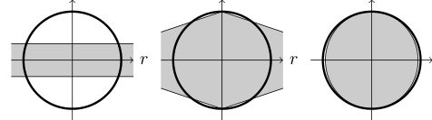
<figcaption class="paper-figure-caption"><b>Fig 1.</b> FIG. 4. 2d cross sections of the regions inside the Bloch ball from all 2 × 2 principal minors of E ⋆ρ with nonegative de- terminant, where E is the partially depolarizing channel (the actual shape in the 3d Bloch ball is obtained by rotating the region about the z-axis). In all figures, λ = 0.68. (a) The</figcaption>
</figure>
<figure class="paper-figure-card">
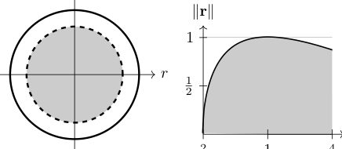
<figcaption class="paper-figure-caption"><b>Fig 2.</b> FIG. 6. (a) A 2d cross section of the region inside the Bloch ball for which the partially depolarizing channel admits causal confusion (the actual shape in the 3d Bloch ball is obtained by rotating the region about the z-axis). This is a ball of</figcaption>
</figure>
<figure class="paper-figure-card">

<figcaption class="paper-figure-caption"><b>Fig 3.</b> Figure 6 shows the region Bλ for λ = 3</figcaption>
</figure>
<figure class="paper-figure-card">
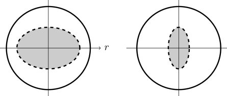
<figcaption class="paper-figure-caption"><b>Fig 4.</b> FIG. 7. A 2d cross section visualization of how the mixed Pauli channel (III.46) acts on the Bloch sphere for p = 1</figcaption>
</figure>
<figure class="paper-figure-card">
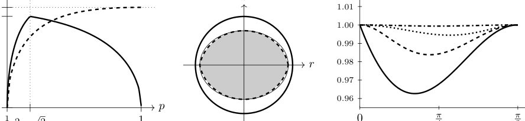
<figcaption class="paper-figure-caption"><b>Fig 5.</b> FIG. 8. (a) A plot of rmin (solid) from (III.49) and zmin (dashed) from (III.50), both expressed as functions of p ∈[ 1</figcaption>
</figure>
</div>

<p><strong>Summary.</strong> This paper tackles the problem of quantum causality by defining 'causal confusion'—when measurement data cannot distinguish between a shared common cause and a sequential direct cause. The authors prove that this confusion occurs if and only if the underlying quantum channel possesses the PPT property, providing a new operational meaning for PPT channels.</p>
<p><strong>Why it may be interesting.</strong> This work provides a rigorous operational definition for PPT channels by linking them to a fundamental concept in quantum causality, which is crucial for understanding the limits of quantum information processing and measurement theory.</p>
<details>
<summary>Detailed structure</summary>
<p><strong>Main problem.</strong> The paper investigates 'causal confusion,' which is the situation where joint expectation values measured in a spatial (common-cause) quantum scenario coincide with those from a temporal (direct-cause) quantum scenario.</p>
<p><strong>Main result.</strong> It establishes that for general systems, a quantum channel exhibits causal confusion for some input state if and only if it is a Positive-Partial-Transpose (PPT) channel, and for qubits, this condition is equivalent to the channel being entanglement-breaking.</p>
<p><strong>Method.</strong> The authors compare joint expectation values calculated under two distinct causal models—a shared bipartite state (spatial) versus sequential measurement through a quantum channel (temporal)—using Pauli observables.</p>
<p><strong>Model / system.</strong> The study uses general finite-dimensional quantum systems and focuses on local measurements performed by two parties (Alice and Bob) on quantum states, analyzing the structure of quantum channels connecting these measurements.</p>
<p><strong>Key observables.</strong> Joint expectation values of Pauli observables ($\sigma_j \otimes \sigma_k$), which are used to distinguish between the spatial and temporal correlation structures.</p>
<p><strong>Important parameters / regimes.</strong> The analysis depends on the properties of the quantum channel $E$ (e.g., PPT, entanglement-breaking) and the choice of input state $
ho$.</p>
<p><strong>Assumptions / limitations.</strong> The analysis is restricted to 'light-touch observables' and uses the Lüders' update rule for the temporal scenario in qubit examples.</p>
<p><strong>Figures summary.</strong> The notes mention a Table I summarizing key results relating bipartite states, PPT/CPTP processes, and EB channels to causal confusion, and a $4 	imes 4$ table structure for qubits comparing spatial and temporal expectation values.</p>
<p><strong>Paper structure.</strong> The paper progresses by defining the spatial and temporal measurement scenarios, demonstrating the conditions for causal confusion using qubit examples, and culminating in general structural theorems linking confusion to PPT and entanglement-breaking properties.</p>
</details>
<details>
<summary>Abstract</summary>
<p>The joint expectation values of quantum observables measured by two parties typically depend on the causal structure of the measurement protocol. The two causal structures we investigate here are the direct-cause scenario, in which a single quantum state is measured twice in series with a general quantum channel between measurements, and the common-cause scenario, in which a shared bipartite quantum state is measured in parallel. Through a variety of examples of qubit channels with tunable parameters, we identify the full set of input states where the direct-cause joint expectation values of Pauli observables coincide with those obtained from a common cause, a situation that we call causal confusion. More generally, for arbitrary finite-dimensional quantum systems and light-touch observables, we prove that a channel exhibits causal confusion for some input state if and only if it is a positive-partial-transpose (PPT) channel, thereby endowing PPT channels with a new operational meaning in terms of causal confusion. Using this result, we characterize the set of qubit channels for which there exists an input state leading to causal confusion as the set of entanglement-breaking channels.</p>
</details>
<p><sub><a href="#top">↑ back to top</a></sub></p>

<p><a id="paper-2610.09623"></a></p>
<h3 id="divide-et-impera-quantum-neural-networks-for-modular-hybrid-computing-architectures"><a href="http://arxiv.org/abs/2610.09623v1">Divide et Impera quantum neural networks for modular hybrid computing architectures</a></h3>
<p><strong>Authors:</strong> Emanuele Casciaro, Fabio Mascherpa, Alfonso Amendola, Filippo Caruso<br>
<strong>Type:</strong> both · <strong>Category:</strong> quantum information and computing · <strong>PDF:</strong> <a href="https://arxiv.org/pdf/2610.09623v1">https://arxiv.org/pdf/2610.09623v1</a><br>
<strong>Analysis basis:</strong> full PDF text, analyzed in chunks
<strong>Topic relevance:</strong> <code>QC/QI experiment</code> <strong>3/5</strong></p>
<div class="figure-strip-hint">↔ Scroll figures horizontally</div>
<div class="paper-figures-scroll">
<figure class="paper-figure-card">
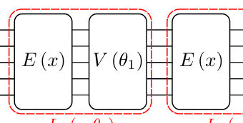
<figcaption class="paper-figure-caption"><b>Fig 1.</b> Fig. 1 Data re-uploading scheme: similarly to skip-connections (Xu et al. 2025) in classical NNs, the input is constantly re-uploaded between every variational block.</figcaption>
</figure>
<figure class="paper-figure-card">
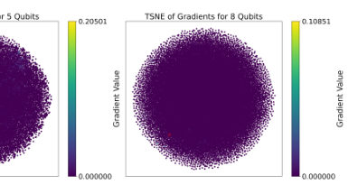
<figcaption class="paper-figure-caption"><b>Fig 2.</b> Fig. 2 T-distributed Stochastic Neighbor Embedding projection of the landscape of the gradients with different circuit sizes, with high values circled in red: with a low qubit count (a), the gradient is well distributed across the landscape, but as the number of qubits increases (b) the gradient starts to concentrate in smaller region, and at high qubits count (c), the gradient can be assumed null almost everywhere.</figcaption>
</figure>
<figure class="paper-figure-card">
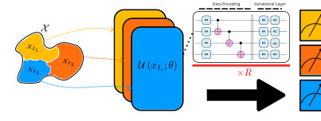
<figcaption class="paper-figure-caption"><b>Fig 3.</b> Fig. 3 Decomposition scheme of the proposed model. For each set of features a dedicated VQC creates an output representation (a). The embeddings computed by each circuit are concatenated and used by a classical network in order to obtain the final output of the layer (b).</figcaption>
</figure>
<figure class="paper-figure-card">
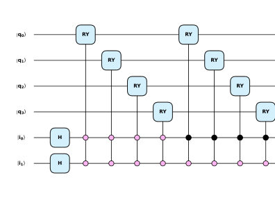
<figcaption class="paper-figure-caption"><b>Fig 4.</b> Fig. 5 Ansatz used for processing the sequence of states, which uses an additional register to encode the sequence index.</figcaption>
</figure>
<figure class="paper-figure-card">
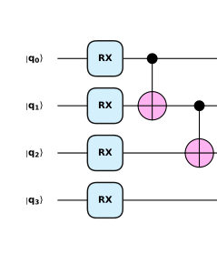
<figcaption class="paper-figure-caption"><b>Fig 5.</b> Fig. 6 Circuit that computes the map |ϕ(x; θ)⟩= U(x; θ) |0⟩</figcaption>
</figure>
</div>

<p><strong>Summary.</strong> This paper tackles the challenge of training Quantum Neural Networks on noisy, limited quantum hardware by proposing a 'divide-et-impera' training protocol. This method decomposes large quantum circuits into smaller, manageable sub-circuits whose outputs are combined classically. The approach is demonstrated on real-world tasks, suggesting a scalable design principle for future hybrid quantum computing architectures.</p>
<p><strong>Why it may be interesting.</strong> The focus on resource-constrained quantum hardware and developing scalable training protocols directly addresses the engineering challenges of implementing quantum algorithms, which is a key concern for quantum information theorists.</p>
<details>
<summary>Detailed structure</summary>
<p><strong>Main problem.</strong> Developing Quantum Machine Learning (QML) models that are feasible to train on current, noisy, and qubit-limited quantum hardware.</p>
<p><strong>Main result.</strong> The proposed divide-et-impera protocol provides a general design principle for QML algorithms, showing feasibility on real-world tasks like predicting EV charging station states.</p>
<p><strong>Method.</strong> The authors propose splitting large Quantum Neural Networks (QNNs) into smaller, manageable sub-circuits, whose concatenated embeddings are then processed by a classical neural network.</p>
<p><strong>Model / system.</strong> The model uses Quantum Neural Networks (QNNs) trained via a variational quantum circuit (VQC) structure, which is decomposed into multiple smaller quantum processing unit (QPU) calls.</p>
<p><strong>Key observables.</strong> Prediction scores (e.g., L1 norm for charging stations), Mean Absolute Error (for Air Quality), and the vanishing/concentration of gradients.</p>
<p><strong>Important parameters / regimes.</strong> Number of qubits, number of trainable parameters, and the error rates from simulated noise channels (Bit-flip, Depolarizing).</p>
<p><strong>Assumptions / limitations.</strong> The method assumes that the feature space can be partitioned or that information loss from circuit decomposition can be mitigated by a reconstructing network.</p>
<p><strong>Figures summary.</strong> Figures illustrate the data re-uploading scheme, the decomposition structure (VQC $
ightarrow$ Concatenation $
ightarrow$ MLP), and heatmaps showing performance degradation under various noise models.</p>
<p><strong>Paper structure.</strong> The paper introduces the limitations of deep QNNs (Barren Plateaus), proposes the divide-et-impera training protocol, benchmarks this approach on two real-world datasets (EV charging stations and Air Quality Index), and analyzes performance under noise.</p>
</details>
<details>
<summary>Abstract</summary>
<p>Quantum machine learning is rapidly emerging as a promising and potentially more sustainable approach that can complement traditional, energy-hungry HPC, AI, and GPU resources-particularly for the demanding global challenges the world urgently needs to address. In recent years, the first prototypes of quantum processors have reached the market, are sometimes available via the cloud, and distributed quantum computing is beginning to move from a largely theoretical concept to a demonstrated reality. However, these devices are still noisy and qubit-limited. Therefore, it is desirable to design quantum machine learning models with a reduced quantum register and a limited number of quantum gates, avoiding overly deep and wide quantum circuits. Here, we explore this idea by proposing a novel divide-et-impera-based training protocol that splits quantum neural networks into smaller components and better governs their optimization. We benchmark our approach on real data and real-world prediction tasks in intertwined energy and environmental domains, such as the status of charging stations for electric vehicles and the global air quality index. Our results suggest a design principle for quantum machine learning algorithms across a wide range of applications, which can be more feasibly tested on state-of-the-art quantum processors or within modular quantum architectures being developed for future hybrid infrastructures interconnected via high-speed communication links.</p>
</details>
<p><sub><a href="#top">↑ back to top</a></sub></p>

<p><a id="paper-2610.10454"></a></p>
<h3 id="exact-excitation-spectra-and-spectral-gaps-of-the-frustrated-spin-12-math313math-math314math-model-via-dual-spin-sector-variational-quantum-eigensolvers"><a href="http://arxiv.org/abs/2610.10454v1">Exact Excitation Spectra and Spectral Gaps of the Frustrated Spin-1/2 $J_1$-$J_2$ Model via Dual Spin-Sector Variational Quantum Eigensolvers</a></h3>
<p><strong>Authors:</strong> Sk Saniur Rahaman<br>
<strong>Type:</strong> theory · <strong>Category:</strong> strongly correlated electrons · <strong>PDF:</strong> <a href="https://arxiv.org/pdf/2610.10454v1">https://arxiv.org/pdf/2610.10454v1</a><br>
<strong>Analysis basis:</strong> full PDF text, analyzed in chunks
<strong>Topic relevance:</strong> <code>analog quantum simulation</code> <strong>3/5</strong></p>
<div class="figure-strip-hint">↔ Scroll figures horizontally</div>
<div class="paper-figures-scroll">
<figure class="paper-figure-card">
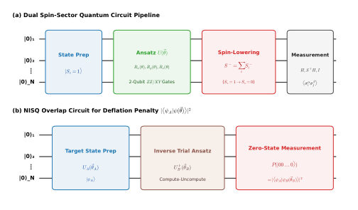
<figcaption class="paper-figure-caption"><b>Fig 1.</b> FIG. 1. Dual Spin-Sector Parameterized VQE circuit archi- tecture. (a) Shallow Parameterized Quantum Circuit (PQC) ansatz U(⃗θ) for sector state preparation (Sz = 1 and Sz = 0), S−total spin-lowering operator mapping, and Pauli expecta- tion value measurement. (b) Shallow Compute-Uncompute overlap measurement circuit U † AU(⃗γ) for evaluating defla- tion penalty terms |⟨ψA|ψ(⃗γ)⟩|2 = P(|00 . . . 0⟩) without deep ancilla-assisted unitaries.</figcaption>
</figure>
<figure class="paper-figure-card">

<figcaption class="paper-figure-caption"><b>Fig 2.</b> FIG. 2. Resource complexity scaling of Dual Spin-Sector Pa- rameterized VQE as a function of system size N ∈[4, 100] qubits (10 × 10 grid). (a) Total 2-qubit CNOT gate count scaling for 1D chains and 2D lattices at circuit depths D = 2 and D = 4. (b) Variational parameter complexity Nθ = 2N(D + 1). Linear gate scaling enables NISQ execution up to N = 100 qubits without deep entangling circuits.</figcaption>
</figure>
<figure class="paper-figure-card">
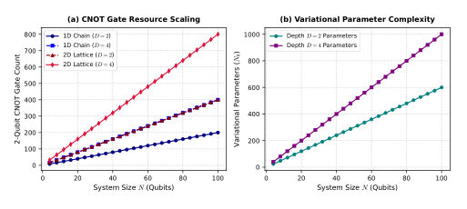
<figcaption class="paper-figure-caption"><b>Fig 3.</b> Fig. 2 presents the explicit gate resource complexity and variational parameter scaling of our algorithm up to N = 100 qubits (10 × 10 rectangular grid). For circuit depth D = 4, CNOT count scales linearly as NCNOT = D·N for 1D chains (NCNOT = 400 at N = 100) and NCNOT ≈2D · N for 2D lattices (NCNOT = 800 at N = 100) [Fig. 2(a)]. Variational parameter count scales strictly linearly as Nθ = 2N(D + 1) [Fig. 2(b)] (Nθ = 1000 at N = 100). Classical L-BFGS-B iteration counts scale sub-exponentially (∼60 −80 iterations for N = 12, ∼80 −100 for N = 16, 20, and projected ≲450 for N = 100). While exact state-vector numerical simu- lations employ classical L-BFGS-B optimization, physi- cal execution...</figcaption>
</figure>
<figure class="paper-figure-card">
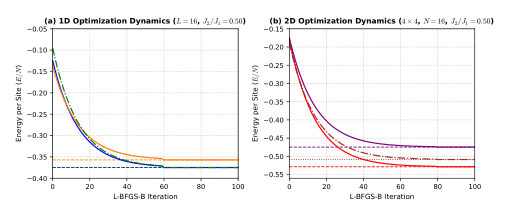
<figcaption class="paper-figure-caption"><b>Fig 4.</b> FIG. 3. Classical L-BFGS-B optimization convergence tra- jectories of energy per site (E/N) at J2/J1 = 0.50 rendered in double-column layout across the full page width for (a) 1D spin chain (L = 16) and (b) 2D rectangular lattice (4 × 4, N = 16). Shown are Ground State Singlet (E0), Triplet (ET ), and Excited Singlet (ES) trajectories settling smoothly onto exact ED benchmark levels (dashed and dotted horizontal lines). In 1D panel (a), ED benchmarks are dashed blue (E0), dashed orange (ET ), and dotted green (ES); Dual VQE op- timization trajectories are solid blue (E0), solid orange (ET ), and dash-dotted green (ES). At J2/J1 = 0.50, 1D E0 and ES overlay identically due to dimer state...</figcaption>
</figure>
<figure class="paper-figure-card">
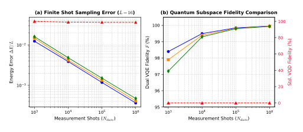
<figcaption class="paper-figure-caption"><b>Fig 5.</b> FIG. 5. Comparative finite quantum measurement shot-noise sampling error benchmark rendered in double-column lay- out across the full page width for 1D system size L = 16 at J2/J1 = 0.20. (a) Energy error per site (∆E/L) across measurement shot budgets Nshots = 103, 104, 105, 106, show- ing Standard VQD ES failure trap curve (dashed red line with triangles) compared to Dual VQE E0 (solid blue line with cir- cles), ET (solid orange line with squares), and ES (solid green line with diamonds). (b) Quantum subspace fidelity with a dual y-axis layout: Dual VQE state fidelities for E0 (blue circles), ET (orange squares), and ES (green diamonds) are plotted on the left axis, while Standard VQD’s...</figcaption>
</figure>
</div>

<p><strong>Summary.</strong> This paper introduces a novel Dual Spin-Sector Variational Quantum Eigensolver (VQE) to accurately calculate excited states in frustrated spin systems like the $J_1$-$J_2$ model. By optimizing across multiple spin sectors and using a penalty cost function, the method resolves ambiguities that plague standard VQE approaches. It successfully reproduces key quantum phases and demonstrates high resilience to noise, advancing the feasibility of quantum simulation for complex magnetic materials.</p>
<p><strong>Why it may be interesting.</strong> This work provides a concrete, advanced quantum algorithm tailored to overcome fundamental limitations (state-ordering inversions) in simulating strongly correlated quantum magnets, which is a major bottleneck for quantum simulation.</p>
<details>
<summary>Detailed structure</summary>
<p><strong>Main problem.</strong> Standard Variational Quantum Eigensolver (VQE) techniques fail to accurately determine excited states and spectral gaps in frustrated spin systems due to state-ordering inversions.</p>
<p><strong>Main result.</strong> The proposed Dual Spin-Sector VQE framework successfully isolates the true Excited Singlet state, achieving convergence to machine precision and accurately capturing known quantum phases.</p>
<p><strong>Method.</strong> The authors developed a Dual Spin-Sector VQE by optimizing across distinct magnetization sectors ($S_z=0$ and $S_z=1$) and using a dual-sector penalty cost function to resolve ambiguities.</p>
<p><strong>Model / system.</strong> The study focuses on the spin-1/2 $J_1$-$J_2$ Heisenberg model, applicable to 1D spin chains and 2D rectangular lattices, characterized by frustrated magnetic interactions.</p>
<p><strong>Key observables.</strong> Ground state energy ($E_0$), Excited Singlet energy ($E_S$), spectral gaps ($\Delta_{SS}, \Delta_{ST}$), and quantum subspace fidelity.</p>
<p><strong>Important parameters / regimes.</strong> The ratio $J_2/J_1$ is critical, with key points identified at $J_2/J_1 \approx 0.2411$ (BKT point) and $J_2/J_1 = 0.50$ (Majumdar-Ghosh point).</p>
<p><strong>Assumptions / limitations.</strong> The method relies on the exact commutation relation $[H, S^-] = 0$ to map the Triplet state, and it assumes the feasibility of implementing the dual-sector penalty cost function on near-term quantum hardware.</p>
<p><strong>Figures summary.</strong> Figures illustrate the dual spin-sector quantum circuit pipeline, the NISQ overlap circuit for penalty terms, and comparisons showing the failure of standard VQD versus the resilience of the Dual VQE under finite measurement shot noise.</p>
<p><strong>Paper structure.</strong> The paper first identifies the failure mode of standard VQE methods in frustrated magnets. It then introduces and details the Dual Spin-Sector VQE framework, showing its application to 1D and 2D lattices, benchmarking its performance against known physical points, and finally demonstrating its resource efficiency for near-term quantum hardware.</p>
</details>
<details>
<summary>Abstract</summary>
<p>Finding excited states and excitation gaps in frustrated spin systems using Variational Quantum Eigensolvers (VQE) is complicated by state-ordering inversions. In the frustrated spin-1/2 $J_1$-$J_2$ Heisenberg model, standard single-sector algorithms like Variational Quantum Deflation (VQD) in $S_z=0$ fail when $J_2/J_1 < 0.25$. In this regime, the lowest-lying excitation in $S_z=0$ is a Triplet ($S=1$), which lies below the Excited Singlet ($S=0$). Standard deflation projects out the ground singlet and converges onto the Triplet state, misidentifying it as the Excited Singlet. Here, we present a Dual Spin-Sector VQE framework that resolves these state-ordering inversions across 1D spin chains and 2D rectangular lattices. By first optimizing the ground Triplet state in the $S_z=1$ sector (where singlet states cannot exist), mapping it into $S_z=0$ via the total spin-lowering operator $S^- = \sum_i S_i^-$, and evaluating a dual-sector penalty cost function, we isolate the Excited Singlet ($E_S$) without variational ambiguity. Numerical state-vector simulations confirm exact convergence to machine precision with unit overlap fidelity. The method captures key physical features, including the gapless phase, the BKT critical point at $J_2/J_1 \approx 0.2411$, the Majumdar-Ghosh dimer point ($J_2/J_1 = 0.50$), and the 2D non-magnetic frustrated regime ($J_2/J_1 \approx 0.40 - 0.60$). Finite-shot sampling simulations and gate-scaling analytics up to $N=100$ qubits demonstrate the resource efficiency and shot resilience of the algorithm for near-term quantum execution.</p>
</details>
<p><sub><a href="#top">↑ back to top</a></sub></p>

<p><a id="paper-2610.09775"></a></p>
<h3 id="multi-scale-spectral-statistics-of-intermediate-quantum-chaos-in-ultracold-erbium-collisions"><a href="http://arxiv.org/abs/2610.09775v1">Multi-scale spectral statistics of intermediate quantum chaos in ultracold erbium collisions</a></h3>
<p><strong>Authors:</strong> Ivan R. R. Gonzalez, Barnali Chakrabarti, Antonio M. S. Macedo<br>
<strong>Type:</strong> theory · <strong>Category:</strong> quantum gases · <strong>PDF:</strong> <a href="https://arxiv.org/pdf/2610.09775v1">https://arxiv.org/pdf/2610.09775v1</a><br>
<strong>Analysis basis:</strong> full PDF text, analyzed in chunks
<strong>Topic relevance:</strong> <code>analog quantum simulation</code> <strong>3/5</strong></p>
<div class="figure-strip-hint">↔ Scroll figures horizontally</div>
<div class="paper-figures-scroll">
<figure class="paper-figure-card">
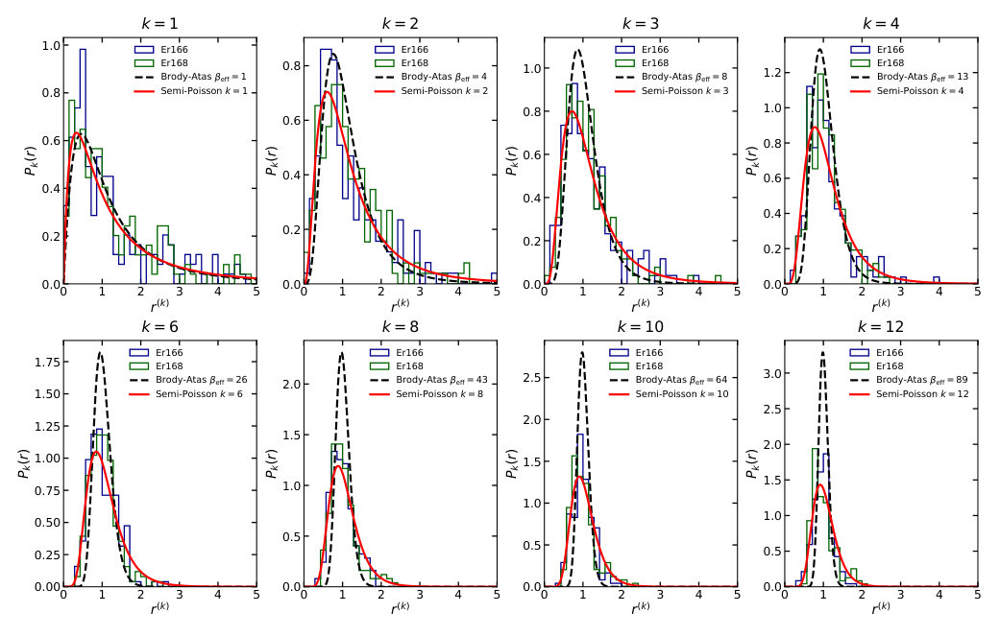
<figcaption class="paper-figure-caption"><b>Fig 1.</b> FIG. 1. Higher-order spacing-ratio distributions Pk(r) for k = 1, 2, 3, 4, 6, 8, 10, 12. Step histograms: empirical data for 166Er and 168Er. Dash-dotted: ATAS surmise at βeff. Dotted: semi-Poisson beta-prime law.</figcaption>
</figure>
<figure class="paper-figure-card">
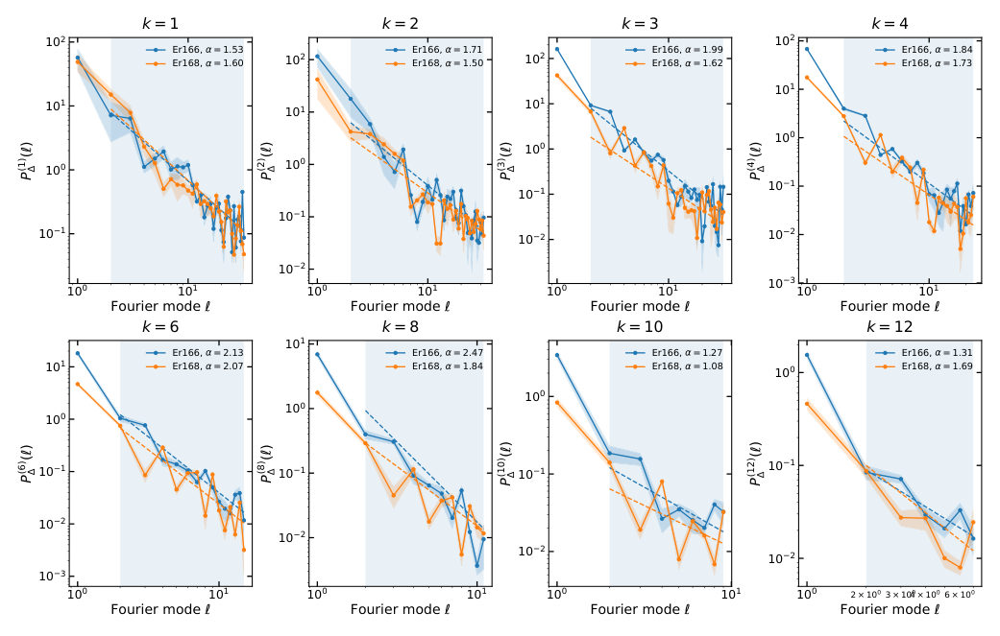
<figcaption class="paper-figure-caption"><b>Fig 2.</b> FIG. 2. Decimated accumulated PSD for k = 1, . . . , 12. The drift of α toward 2 at intermediate k signals the progressive loss of spectral rigidity at mesoscopic scales.</figcaption>
</figure>
<figure class="paper-figure-card">
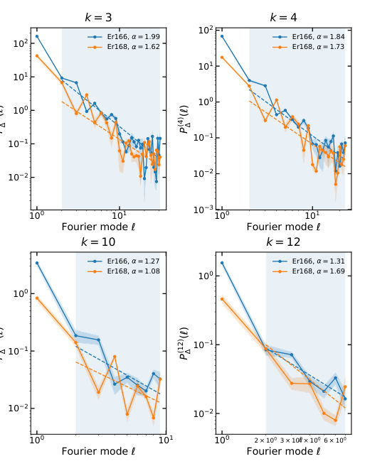
<figcaption class="paper-figure-caption"><b>Fig 3.</b> Figure 2 extends the PSD analysis to all investigated values of k, with the resulting exponents collected in Ta- ble I. For 166Er, the exponent increases from α = 1.53 at k = 1 to values near and above the Brownian limit, reaching α = 2.47 at k = 8, before decreasing to α ≃1.3 at k = 12, where only seven modes are available. For 168Er, a similar increase toward the Brownian regime is observed at intermediate decimation orders, with α ris- ing from 1.60 at k = 1 to 2.07 at k = 6, followed by substantial fluctuations at larger k. The intermediate-k enhancement of α toward the integrable value indicates a reduction of spectral rigidity under coarse-graining, while the pronounced large-k...</figcaption>
</figure>
<figure class="paper-figure-card">
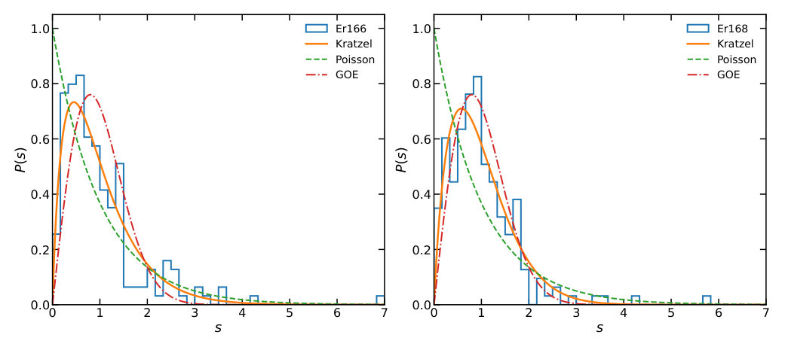
<figcaption class="paper-figure-caption"><b>Fig 4.</b> FIG. 3. Adjacent spacing distributions P(s) with Kr¨atzel fits for 166Er (left) and 168Er (right). The fitted (η, h) parameters indicate linear repulsion with tails broader than Gaussian tails, consistent with semi-Poisson affinity.</figcaption>
</figure>
<figure class="paper-figure-card">
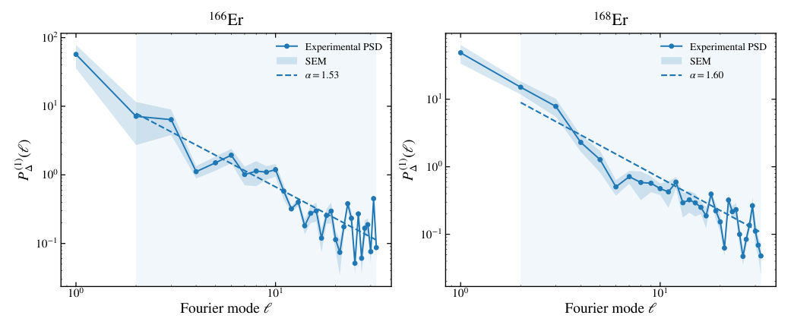
<figcaption class="paper-figure-caption"><b>Fig 5.</b> FIG. 4. Accumulated power spectral density (PSD), P (1) ∆(ℓ), for k = 1, computed using a window length of L = 64, with 8 records and 32 Fourier modes. The shaded region represents the standard error of the mean (SEM), calculated from the dispersion of the PSD across the individual records and providing an estimate of the uncertainty in the averaged spectrum. Dashed lines indicate the corresponding Theil-Sen power-law fits. The extracted spectral exponents are α = 1.53 for 166Er and α = 1.60 for 168Er.</figcaption>
</figure>
</div>

<p><strong>Summary.</strong> The authors analyze the energy spectra of ultracold erbium atoms to characterize their degree of quantum chaos. By employing multi-scale statistical diagnostics, they find the spectra exhibit intermediate statistics, best described by semi-Poisson behavior rather than purely chaotic or integrable limits. This suggests the underlying collision dynamics involve a complex, hierarchical mixing of phase space regions.</p>
<p><strong>Why it may be interesting.</strong> This work provides a quantitative spectral fingerprint for intermediate quantum chaos in a highly controllable quantum gas system, offering diagnostic tools applicable to other complex quantum many-body systems.</p>
<details>
<summary>Detailed structure</summary>
<p><strong>Main problem.</strong> The paper aims to characterize the spectral statistics of quantum systems exhibiting intermediate quantum chaos, bridging the gap between integrable and fully chaotic limits.</p>
<p><strong>Main result.</strong> The spectral statistics of ultracold erbium atoms are consistently described by semi-Poisson statistics, indicating intermediate quantum chaos that is scale-dependent.</p>
<p><strong>Method.</strong> A multi-scale statistical analysis is employed using higher-order spacing ratios, accumulated power spectral density (PSD) analysis, and spacing increment distributions.</p>
<p><strong>Model / system.</strong> The study uses the resonance spectra of ultracold erbium atoms ($^{166}	ext{Er}$ and $^{168}	ext{Er}$) obtained via Fano-Feshbach resonances, which model a system with mixed phase space dynamics.</p>
<p><strong>Key observables.</strong> Higher-order spacing ratios ($r^{(k)}_n$), accumulated power spectral density exponent ($\alpha$), and spacing increment distributions.</p>
<p><strong>Important parameters / regimes.</strong> Intermediate quantum chaos regime; crossover parameter $T$; spectral rigidity exponent $\alpha \approx 1.5$; semi-Poisson statistics.</p>
<p><strong>Assumptions / limitations.</strong> The analysis relies on treating resonance positions as sharp eigenvalues and comparing empirical data against theoretical models like the ATAS surmise and stochastic crossover frameworks.</p>
<p><strong>Figures summary.</strong> Figures compare empirical distributions of higher-order ratios against Wigner-Dyson and semi-Poisson predictions, and show the scale-dependent behavior of the accumulated PSD.</p>
<p><strong>Paper structure.</strong> The paper systematically analyzes spectral correlations using multiple diagnostics (ratios, PSD, increments) to build a consistent picture of intermediate chaos, linking these statistics to a stochastic crossover model.</p>
</details>
<details>
<summary>Abstract</summary>
<p>Characterizing intermediate quantum chaos in systems with mixed phase spaces requires probing spectral correlations across multiple scales. Here, we present a multi-scale statistical analysis of the resonance spectra of ultracold 166Er and 168Er atoms using higher-order spacing ratios, spacing increments, and the accumulated power spectral density of decimated level sequences. Our analysis reveals that while the spectra exhibit clear level repulsion, they are consistently better described by semi-Poisson than by standard Wigner-Dyson ensembles, with this intermediate character persisting across higher-order correlations. The accumulated power spectrum reveals an intermediate 1/f^alpha regime, with alpha approximately 1.5 at full spectral resolution and a tendency toward the integrable random-walk limit alpha = 2 at intermediate decimation scales, indicating a scale-dependent loss of spectral rigidity. Furthermore, the spacing-increment distributions independently reveal statistics intermediate between Laplace and Gaussian limits. Together, these complementary diagnostics show that the semi-Poisson character reflects persistent non-Wigner-Dyson correlations beyond the nearest-neighbor scale, providing a consistent picture of intermediate quantum chaos and a possible connection to hierarchical trapping in the underlying collision dynamics.</p>
</details>
<p><sub><a href="#top">↑ back to top</a></sub></p>

<p><a id="paper-2610.09798"></a></p>
<h3 id="quantum-optimization-of-the-color-of-money-problem-on-ibm-quantum-hardware-a-proof-of-concept-study"><a href="http://arxiv.org/abs/2610.09798v1">Quantum Optimization of the Color-of-Money Problem on IBM Quantum Hardware: A Proof-of-Concept Study</a></h3>
<p><strong>Authors:</strong> Rahul Rana, Suman Kumar Roy, M Girish Chandra<br>
<strong>Type:</strong> both · <strong>Category:</strong> quantum information and computing · <strong>PDF:</strong> <a href="https://arxiv.org/pdf/2610.09798v1">https://arxiv.org/pdf/2610.09798v1</a><br>
<strong>Analysis basis:</strong> full PDF text, analyzed in chunks
<strong>Topic relevance:</strong> <code>QC/QI experiment</code> <strong>3/5</strong></p>
<div class="figure-strip-hint">↔ Scroll figures horizontally</div>
<div class="paper-figures-scroll">
<figure class="paper-figure-card">
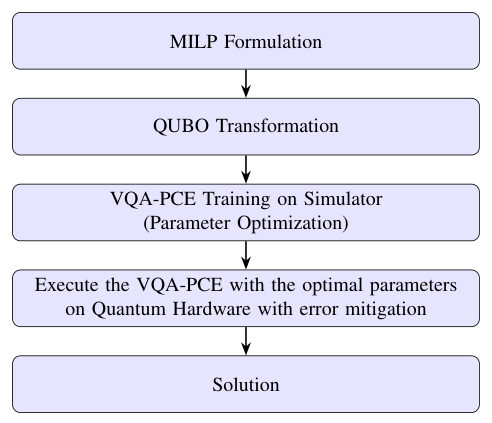
<figcaption class="paper-figure-caption"><b>Fig 1.</b> Fig. 1: Overall workflow of the quantum optimization frame- work.</figcaption>
</figure>
</div>

<p><strong>Summary.</strong> This work demonstrates a proof-of-concept quantum solution for the complex Color-of-Money financial optimization problem. It reformulates the problem into a QUBO and uses a Variational Quantum Algorithm (VQA) with Pauli Correlation Encoding (PCE) on IBM Quantum hardware. The results confirm the quantum method's ability to match classical optimal solutions, establishing a foundation for quantum optimization in finance.</p>
<p><strong>Why it may be interesting.</strong> While the application is finance-related, the core methodology—mapping combinatorial optimization to QUBO and solving it via VQA-PCE on real hardware—is a direct demonstration of quantum algorithm implementation for constrained optimization.</p>
<details>
<summary>Detailed structure</summary>
<p><strong>Main problem.</strong> The paper addresses the Color-of-Money (CoM) problem, a complex financial optimization challenge involving resource allocation under multiple constraints.</p>
<p><strong>Main result.</strong> The quantum approach successfully reproduced the optimal solution found by a classical exact solver (SCIP) on a prototype instance, validating the methodology's feasibility.</p>
<p><strong>Method.</strong> It uses a Variational Quantum Algorithm (VQA) combined with Pauli Correlation Encoding (PCE) to map the problem into a QUBO format executable on quantum hardware.</p>
<p><strong>Model / system.</strong> The problem is modeled as a constrained Mixed-Integer Linear Programming (MILP) problem, transformed into a QUBO objective function, and implemented on IBM Quantum hardware.</p>
<p><strong>Key observables.</strong> The objective function value (e.g., 151.00) and the expectation values of Pauli correlation observables $\langle P_i 
angle$.</p>
<p><strong>Important parameters / regimes.</strong> Penalty coefficients ($\lambda_1$ to $\lambda_4$), the scaling parameter $\alpha$, and the variational circuit parameters $  heta$.</p>
<p><strong>Assumptions / limitations.</strong> The methodology assumes that the quantum approach can correctly map and solve the optimization problem, although current hardware noise limits outperformances on small instances.</p>
<p><strong>Figures summary.</strong> Figure 1 illustrates the entire workflow: MILP $
ightarrow$ QUBO $
ightarrow$ VQA-PCE Training (Simulator) $
ightarrow$ Hardware Execution (with error mitigation) $
ightarrow$ Solution.</p>
<p><strong>Paper structure.</strong> The paper follows a structure moving from problem definition (MILP/CoM) to quantum formulation (QUBO/VQA-PCE), detailing the hybrid quantum-classical workflow, and concluding with hardware execution and benchmarking against classical solvers.</p>
</details>
<details>
<summary>Abstract</summary>
<p>The Color-of-Money (CoM) problem is a financial optimization challenge in which enterprises must determine how to allocate and route funds across multiple accounts, currencies, and time periods while satisfying regulatory, operational, and liquidity constraints. As the number of assets, obligations, and planning periods increases, the decision space grows rapidly, making large-scale optimization increasingly challenging for classical approaches. In this work, we present a proof-of-concept quantum implementation of the CoM problem using IBM Quantum hardware. The original optimization problem is formulated as a constrained Mixed-Integer Linear Programming (MILP) problem and transformed into a Quadratic Unconstrained Binary Optimization (QUBO) representation suitable for quantum execution. We employ a Variational Quantum Algorithm (VQA) with Pauli Correlation Encoding (PCE), a qubit efficient encoding technique and apply error-mitigation technique to improve solution fidelity on noisy quantum hardware. A prototype instance consisting of 3 assets, 3 obligations, and 2 time periods was executed on real IBM quantum hardware and benchmarked against classical exact solver SCIP. The quantum approach successfully reproduced the same optimal solution obtained classically, validating the correctness and feasibility of the proposed methodology. While current noisy quantum hardware does not outperform classical optimization on the evaluated small instance, the results demonstrate the feasibility of executing treasury optimization workloads on current quantum hardware and provide a foundation for future investigations.</p>
</details>
<p><sub><a href="#top">↑ back to top</a></sub></p>

<p><a id="paper-2610.09532"></a></p>
<h3 id="vibrational-sample-based-quantum-diagonalization-with-unitary-cluster-jastrow-ansatze-on-ibm-qpus"><a href="http://arxiv.org/abs/2610.09532v1">Vibrational Sample-Based Quantum Diagonalization with Unitary-Cluster-Jastrow Ansätze on IBM QPUs</a></h3>
<p><strong>Authors:</strong> Kunal Kumar, Erik Lötstedt, Yuri Kobayashi, Seiji Yunoki<br>
<strong>Type:</strong> both · <strong>Category:</strong> other · <strong>PDF:</strong> <a href="https://arxiv.org/pdf/2610.09532v1">https://arxiv.org/pdf/2610.09532v1</a><br>
<strong>Analysis basis:</strong> full PDF text, analyzed in chunks
<strong>Topic relevance:</strong> <code>QC/QI experiment</code> <strong>3/5</strong></p>
<div class="figure-strip-hint">↔ Scroll figures horizontally</div>
<div class="paper-figures-scroll">
<figure class="paper-figure-card">
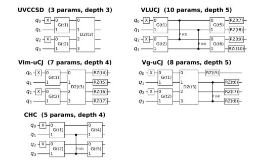
<figcaption class="paper-figure-caption"><b>Fig 1.</b> Figure 1: All five ansätze at the toy N = 2, M = 2 (4- qubit) system, one layer, P = 1 pair (VIm-uCJ, Vg-uCJ) – P is the number of intermode modal pairs (i, k), (j, l) chosen to receive a diagonal Jastrow correlator/D2 primitive, out of the N 2  (M −1)2 possible pairs (Table 2), so P = 1 here is the minimal, non-empty choice at this toy system’s own small pair count. Givens (“G”) and paired double excitation (“D2”) are drawn as opaque boxes; the diagonal Jastrow (“P”) and RZ tail are drawn as their native gates. The true native- gate compilation of a single D2(θ) on this system is depth 66, 25 CZ gates once transpiled at optimization_level=3 to generic Heron basis gates – illustrative of...</figcaption>
</figure>
<figure class="paper-figure-card">
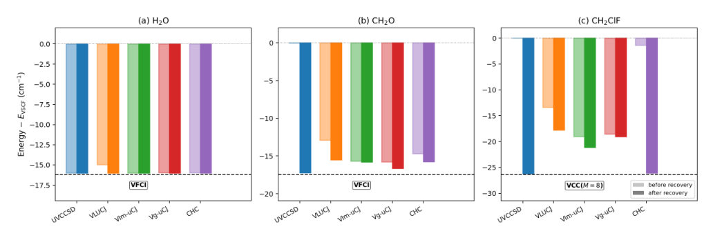
<figcaption class="paper-figure-caption"><b>Fig 2.</b> Figure 2: ibm_phoenix hardware, layers=1, vibrational ground-state energy relative to the VSCF reference (E −EVSCF) for each of the five ansätze, modal basis, M=4 (12/24/36 qubits for H2O/CH2O/CH2ClF respectively) – faded bars are before self- consistent recovery (an explicit subspace diagonalization over whatever the raw sample actually contained), filled bars are after. The dashed line (labeled in-panel) is the converged classical target (VFCI for H2O/CH2O; VCC(M=8) for CH2ClF, whose Hamiltonian is too large for VFCI, Table 3’s footnote). We show M=4 because several ansätze retain sufficient pre-recovery signal for the effect of recovery to remain visible. The corresponding ibm_kingston...</figcaption>
</figure>
<figure class="paper-figure-card">
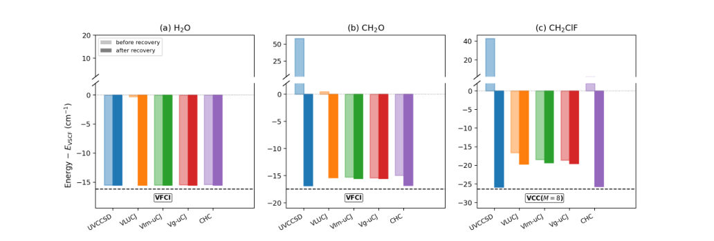
<figcaption class="paper-figure-caption"><b>Fig 3.</b> Figure 3: Same as Figure 2, but in the HO basis. The comparison shows that the relative quality of the raw modal- and HO-basis samples depends on the ansatz and its retained one-hot signal. The corresponding ibm_kingston comparison is shown in Appendix D.3, Figure A4b.</figcaption>
</figure>
<figure class="paper-figure-card">
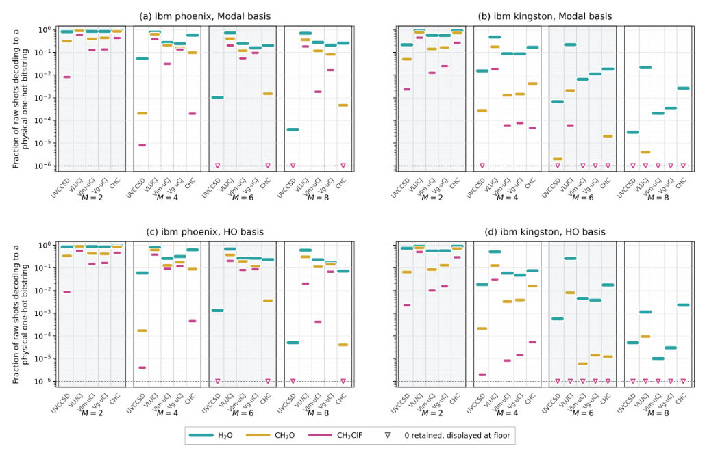
<figcaption class="paper-figure-caption"><b>Fig 4.</b> Figure 4: One-hot retention (fraction of raw shots decoding to a physical bitstring, before recovery) vs. modal count M, log scale, in four panels: ibm_phoenix (left) vs. ibm_kingston (right), modal basis (top) vs. HO basis (bottom). Each outlined, alternately-shaded group corresponds to one modal count M and contains five ansatz columns (in the order UVCCSD, VLUCJ, VIm-uCJ, Vg-uCJ, CHC, left to right, separated by thin vertical rules). Within one ansatz column, each molecule’s individually measured retention (H2O, CH2O, CH2ClF, each run once at that parameter setting – not repeated trials of the same system) is drawn as its own short horizontal line at that value, colored by molecule (teal...</figcaption>
</figure>
<figure class="paper-figure-card">
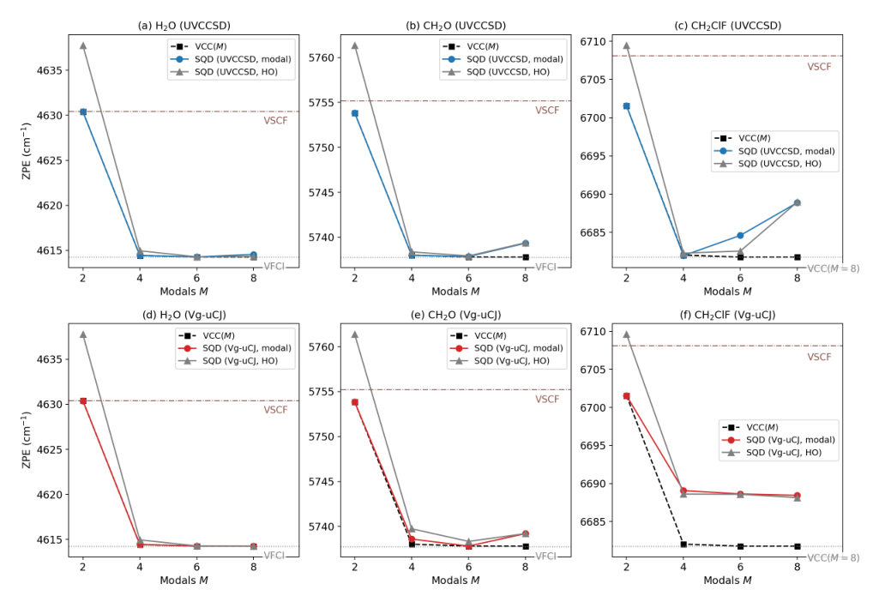
<figcaption class="paper-figure-caption"><b>Fig 5.</b> Figure 5: Ground-state energy vs. modal count M on ibm_phoenix for UVCCSD (top row, panels a–c) – the deepest, highest- CZ-count ansatz tested (Table 2) – and Vg-uCJ (bottom row, panels d–f), a representative shallow Jastrow-family circuit, in both the modal and HO bases. Results are compared with the classical VCC(M) hierarchy and with the converged VFCI reference for H2O and CH2O, or the VCC(M=8) reference for CH2ClF (Table 3). Numerical errors and retention-dependent trends are discussed in the molecule-specific subsections below.</figcaption>
</figure>
</div>

<p><strong>Summary.</strong> This paper develops and tests advanced quantum algorithms for calculating the anharmonic vibrational spectra of molecules using quantum hardware. It compares several unitary-cluster-Jastrow ansätze, finding that hardware noise limits performance, but demonstrating that structured quantum sampling outperforms random guessing. The work successfully calculates fundamental vibrational frequencies on IBM QPUs, advancing the field's practical application to molecular physics.</p>
<p><strong>Why it may be interesting.</strong> This work directly tackles the application of quantum computation to molecular structure and dynamics, a core area of AMO physics, by benchmarking advanced quantum algorithms against real-world hardware noise.</p>
<details>
<summary>Detailed structure</summary>
<p><strong>Main problem.</strong> The paper addresses extending sample-based quantum diagonalization (SQD) to accurately calculate anharmonic vibrational spectra of molecules using current quantum hardware.</p>
<p><strong>Main result.</strong> The novel VLUCJ ansatz proved to be the most hardware-robust circuit structure, while the study successfully demonstrated calculating fundamental vibrational frequencies on IBM QPUs.</p>
<p><strong>Method.</strong> The authors employ SQD, warm-starting the process with vibrational coupled-cluster (VCC) amplitudes, and comparing multiple unitary-cluster-Jastrow ansätze on superconducting quantum processors.</p>
<p><strong>Model / system.</strong> The system models are the vibrational spectra of small molecules ($ ext{H}_2    ext{O}$, $  ext{CH}_2   ext{O}$, $  ext{CH}_2   ext{ClF}$), governed by a quartic force-field Hamiltonian derived from DFT calculations.</p>
<p><strong>Key observables.</strong> Ground-state and excited-state energies, fundamental vibrational frequencies, and the fraction of physically valid one-hot outcomes (retention).</p>
<p><strong>Important parameters / regimes.</strong> Qubit count up to 72, comparison between harmonic-oscillator and vibrational self-consistent-field (VSCF) reference bases, and the anharmonic coupling terms up to quartic order.</p>
<p><strong>Assumptions / limitations.</strong> The accuracy relies on the underlying potential energy surface approximation and the comparison highlights a trade-off between ansatz expressivity and hardware robustness.</p>
<p><strong>Figures summary.</strong> Figures compare energy gaps and circuit performance (CZ count, depth) across different ansätze and sampling methods (random vs. structured quantum sample) on IBM hardware.</p>
<p><strong>Paper structure.</strong> The paper introduces the theoretical framework (Hamiltonian, SQD), details the comparison of five ansätze, benchmarks performance on IBM QPUs by comparing results against random sampling and classical VSCF targets, and concludes with the calculation of representative vibrational frequencies.</p>
</details>
<details>
<summary>Abstract</summary>
<p>We extend sample-based quantum diagonalization (SQD) to anharmonic vibrational spectra and use it to benchmark how vibrational ansätze scale on present-day hardware under a direct one-hot encoding (up to 72 qubits). Five particle-conserving circuits are warm-started through vibrational coupled-cluster (VCC) t1, t2 amplitudes: UVCCSD, the compact heuristic circuit (CHC), and three unitary-cluster-Jastrow ansätze introduced here, VLUCJ, Vg-uCJ, and VIm-uCJ. A self-consistent configuration-recovery loop reconstructs correlated states from hardware samples in the low-retention regime where naïve post-selection breaks down, enabling the calculation of ground-state energies for H$_2$O, CH$_2$O, and CH$_2$ClF (3-9 modes). We compare harmonic-oscillator and vibrational self-consistent-field (VSCF, "modal") reference bases. In the small-modal-basis regime relevant for near-term devices, the modal basis is typically more accurate than the harmonic-oscillator representation; empirically, it also yields substantially better-converged hardware sampling for deep circuits at these qubit counts. Across ansätze, we find a clear retention/accuracy tradeoff when scaling: the new VLUCJ circuit is the most hardware-robust, retaining the largest fraction of physically valid one-hot outcomes, whereas the more expressive uCJ variants and UVCCSD can recover more correlation when retention is sufficient. Finally, we extend the recovery protocol to excited states by targeting a chosen per-mode VSCF occupation and warm-starting it with a state-specific VCC calculation, and we demonstrate the calculation of one representative fundamental vibrational frequency per molecule on IBM QPUs.</p>
</details>
<p><sub><a href="#top">↑ back to top</a></sub></p>

<p><a id="paper-2610.09879"></a></p>
<h3 id="a-repeating-sequence-of-simple-rules-creates-a-universal-computer"><a href="http://arxiv.org/abs/2610.09879v1">A repeating sequence of simple rules creates a universal computer</a></h3>
<p><strong>Authors:</strong> Riz Fernando Noronha<br>
<strong>Type:</strong> theory · <strong>Category:</strong> statistical mechanics · <strong>PDF:</strong> <a href="https://arxiv.org/pdf/2610.09879v1">https://arxiv.org/pdf/2610.09879v1</a><br>
<strong>Analysis basis:</strong> full PDF text, analyzed in chunks
<strong>Topic relevance:</strong> <code>analog quantum simulation</code> <strong>2/5</strong> · <code>non-equilibrium universality</code> <strong>2/5</strong> · <code>Frenkel-Kontorova</code> <strong>1/5</strong> · <code>driven-dissipative phase transition</code> <strong>1/5</strong> · <code>methods for driven-dissipative</code> <strong>1/5</strong></p>
<div class="figure-strip-hint">↔ Scroll figures horizontally</div>
<div class="paper-figures-scroll">
<figure class="paper-figure-card">
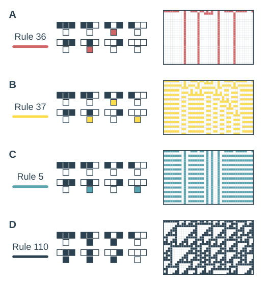
<figcaption class="paper-figure-caption"><b>Fig 1.</b> Figure 1: Rule tables. Rules 36, 37, and 5 (A-C) are all mirror symmetric, and result in trivial oscillating or stationary pat- terns. Rule 110 (D) displays remarkable complex structure.</figcaption>
</figure>
<figure class="paper-figure-card">

<figcaption class="paper-figure-caption"><b>Fig 2.</b> Figure 2: Combining the three simple rules can give rise to rule 110. A: The tiling pattern of the rules, and the assignment of [100] to [0] and [000] to [1]; B: The effective rule 110 table in the combined system, showing how each input ultimately reduces to the output expected of rule 110; C: A simulation trace, which upon rescaling, recreates rule 110.</figcaption>
</figure>
<figure class="paper-figure-card">

<figcaption class="paper-figure-caption"><b>Fig 3.</b> Figure 3: Schematic (A) and simulations (B) of the system’s time evolution for different scenarios based on the domain walls. Different colors represent regions of space emulating rule 110 in different phases. If domains are balanced (left and right), they converge and annihilate (A1/B1). If domains move leftwards, one is pinned, and eventually takes over (A2/B2). If domains are moving rightwards, they never approach each other, and the system never locks (A3/B3). C: Locking times versus system size, for the systems that do lock. C1: All sys- tems, showing an approximate power law of N 2, C2: Seg- regated by mechanisms: balanced scales with N, while left- moving walls (which grow in abundance...</figcaption>
</figure>
<figure class="paper-figure-card">

<figcaption class="paper-figure-caption"><b>Fig 4.</b> Figure 4: Behavior of the system under noise. A: A plot of the errors propagating in the model with random bit flips. Domain walls form in pairs, and spread with a constant drift. B: The probability for an error to lead to the formation of a domain wall, for each rule. Four out of nine never split into walls. p is estimated as the average. C, D: The steady-state fraction of domain walls as a function of noise, showing √ε scaling (C) and the rescaled fraction of domain walls over time (D), with the rate equation prediction using parameters for p = 0.23 and v = (vL + vR)/2 = 0.2275 estimated from simulations.</figcaption>
</figure>
</div>

<p><strong>Summary.</strong> This paper shows that the universal computation power of Rule 110 can be replicated using only three simple, mirror-symmetric rules arranged periodically. The complexity and inherent chirality of the resulting system emerge from this arrangement, not from the rules themselves. The analysis quantitatively models how noise introduces errors, predicting that the resulting domain wall density scales with the square root of the noise strength.</p>
<p><strong>Why it may be interesting.</strong> This work provides a concrete, non-quantum example of how emergent complexity and broken symmetries (chirality) can arise purely from the <em>arrangement</em> of simple, local, and symmetric components, which has parallels in designing complex quantum systems from simple local interactions.</p>
<details>
<summary>Detailed structure</summary>
<p><strong>Main problem.</strong> The paper demonstrates that complex, universal computation (Turing completeness) can emerge from the arrangement of simple, individually trivial, and symmetric local rules, rather than requiring inherent asymmetry in the rules themselves.</p>
<p><strong>Main result.</strong> Rule 110 can be emulated by alternating three mirror-symmetric rules, and the system's robustness and error dynamics (domain wall scaling) are quantitatively predicted and observed.</p>
<p><strong>Method.</strong> The authors used the framework of Elementary Cellular Automata (ECA), constructing a complex rule via a periodic mixture of three simple rules and analyzing the resulting domain wall dynamics under random noise.</p>
<p><strong>Model / system.</strong> The model is an Elementary Cellular Automaton (ECA) lattice. The complexity is achieved by tiling the lattice with three simple, symmetric rules (Rule 36, 37, and 5) in a repeating sequence to mimic the behavior of the complex Rule 110.</p>
<p><strong>Key observables.</strong> Domain wall density ($n$), system locking time, and the scaling of domain wall density with noise strength ($\sqrt{\epsilon}$).</p>
<p><strong>Important parameters / regimes.</strong> Noise strength ($\epsilon$), the ratio of domain wall density to lattice size ($n/L$), and the parameters governing the rate equation ($rac{dn}{dt} = 6p\epsilon - 4v (n/2)^2$).</p>
<p><strong>Assumptions / limitations.</strong> The analysis assumes a computational-mechanics picture where domain walls move ballistically, and the rate equation provides a good description of the steady state, although the final approach to equilibrium is noted to be slower than predicted.</p>
<p><strong>Figures summary.</strong> Figures illustrate the comparison between the complex target rule (Rule 110) and its simple components, show the time evolution and locking times for random initial conditions, and demonstrate the steady-state domain wall fraction scaling with $\sqrt{\epsilon}$ matching the rate equation.</p>
<p><strong>Paper structure.</strong> The paper first establishes the construction of Rule 110 from simple rules, then analyzes the system's self-organization from random initial conditions, and finally models the error propagation by introducing noise and deriving/testing a rate equation for the domain wall density.</p>
</details>
<details>
<summary>Abstract</summary>
<p>We show that the Turing complete rule 110 in elementary cellular automata can be emulated by alternating three simple symmetric rules in space. As the constituent rules themselves are trivial, this shows that diversity alone can generate emergent phenomena. The rules cannot distinguish left from right, and the chirality of rule 110 is created by their arrangement. Random initial conditions lock on to rule 110 over 90% of the time, explained through the motion of domain walls between desynchronized regions. Adding random noise creates errors that seed domain walls, whose fraction scales with the square root of noise strength, explained through a simple rate equation. This points to a route to complexity through repeated, perturbed units, common in biology, and shows that in cellular automaton models of quantum field theory, broken symmetries such as parity need not be present in the local rules.</p>
</details>
<p><sub><a href="#top">↑ back to top</a></sub></p>

<p><a id="paper-2610.09641"></a></p>
<h3 id="q-photomarket-a-design-space-exploration-framework-for-photonic-hybrid-quantum-neural-networks-in-financial-market-prediction"><a href="http://arxiv.org/abs/2610.09641v1">Q-PhotoMarket: A Design Space Exploration Framework for Photonic Hybrid Quantum Neural Networks in Financial Market Prediction</a></h3>
<p><strong>Authors:</strong> Alberto Marchisio, Hanzalah Mohamed Siraj, Muhammad Kashif, Nouhaila Innan, Muhammad Shafique<br>
<strong>Type:</strong> both · <strong>Category:</strong> quantum information and computing · <strong>PDF:</strong> <a href="https://arxiv.org/pdf/2610.09641v1">https://arxiv.org/pdf/2610.09641v1</a><br>
<strong>Analysis basis:</strong> full PDF text, analyzed in chunks
<strong>Topic relevance:</strong> <code>analog quantum simulation</code> <strong>2/5</strong> · <code>methods for driven-dissipative</code> <strong>2/5</strong> · <code>interference shaping light</code> <strong>1/5</strong> · <code>quantum measurements</code> <strong>1/5</strong> · <code>quantum optics experiment</code> <strong>1/5</strong></p>
<div class="figure-strip-hint">↔ Scroll figures horizontally</div>
<div class="paper-figures-scroll">
<figure class="paper-figure-card">

<figcaption class="paper-figure-caption"><b>Fig 1.</b> Fig. 1: Distribution of AUC across valid photonic HQNN configurations for the S&amp;P 500, NIFTY 50, and cryptocurrency markets.</figcaption>
</figure>
<figure class="paper-figure-card">

<figcaption class="paper-figure-caption"><b>Fig 2.</b> Fig. 2: Overview of the proposed Q-PhotoMarket framework.</figcaption>
</figure>
<figure class="paper-figure-card">

<figcaption class="paper-figure-caption"><b>Fig 3.</b> Fig. 3: Two-dimensional t-SNE visualization of the engineered feature spaces for the S&amp;P 500, NIFTY 50, and cryptocurrency datasets.</figcaption>
</figure>
<figure class="paper-figure-card">

<figcaption class="paper-figure-caption"><b>Fig 4.</b> Fig. 4: Prediction-collapse diagnostics. Left: calibrated decision thresholds versus positive prediction rate (PPR). Right: fraction of configurations exhibiting prediction collapse under different return thresholds.</figcaption>
</figure>
<figure class="paper-figure-card">

<figcaption class="paper-figure-caption"><b>Fig 5.</b> Fig. 5: Mean AUC obtained across the explored photonic HQNN design space for different combinations of circuit architectures and measurement strategies at τ = 1%.</figcaption>
</figure>
</div>

<p><strong>Summary.</strong> This work introduces Q-PhotoMarket, a systematic framework to explore the vast design space of Photonic Hybrid Quantum Neural Networks (HQNNs) for financial forecasting. By testing thousands of photonic configurations, the authors demonstrate that the specific choice of circuit architecture and measurement strategy critically determines predictive power. The findings confirm that quantum circuit design is a crucial, often overlooked, factor in realizing quantum machine learning applications.</p>
<p><strong>Why it may be interesting.</strong> While the application is finance, the core methodology involves optimizing complex quantum circuit parameters (topology, measurement) using advanced search techniques (BO/TPE), which is highly relevant to quantum algorithm design and resource estimation in quantum information.</p>
<details>
<summary>Detailed structure</summary>
<p><strong>Main problem.</strong> The paper addresses the lack of systematic investigation into how specific photonic circuit design choices influence the predictive performance of Hybrid Quantum Neural Networks (HQNNs) when applied to financial market prediction.</p>
<p><strong>Main result.</strong> Systematic exploration of over 5,000 photonic configurations reveals consistent, measurable architectural patterns across different financial markets, demonstrating that the choice of circuit topology and measurement strategy significantly impacts performance relative to classical baselines.</p>
<p><strong>Method.</strong> A systematic Design Space Exploration (DSE) framework, Q-PhotoMarket, is employed, combining exhaustive search with Bayesian Optimization to test various photonic circuit parameters.</p>
<p><strong>Model / system.</strong> The model is a Photonic HQNN implemented using linear-optical circuits (beam splitters, phase shifters) simulated via the Merlin framework. The computation is hybrid, coupling a trainable photonic QuantumLayer with a classical MLP head.</p>
<p><strong>Key observables.</strong> Area Under the Curve (AUC), Matthews Correlation Coefficient (MCC), F1-score, and the General Performance Score (GPS) are used to evaluate predictive performance across U.S., Indian, and cryptocurrency markets.</p>
<p><strong>Important parameters / regimes.</strong> The design space includes input photon states (e.g., Alternating, Bunched), circuit architectures (e.g., Clements Mesh, Simple), entangling models (MZI, Bell), and measurement strategies (Fock, Dual-rail).</p>
<p><strong>Assumptions / limitations.</strong> The analysis assumes that the shared statistical structure across different financial markets allows for meaningful cross-market comparisons, and the performance is highly sensitive to the specific photonic design choices made.</p>
<p><strong>Figures summary.</strong> Figures illustrate the distribution of AUC across the design space, show DSE diagnostics for different markets (S&amp;P 500, NIFTY 50, Crypto) across various thresholds, and compare performance against classical ML baselines.</p>
<p><strong>Paper structure.</strong> The paper introduces the problem, details the Q-PhotoMarket DSE framework, describes the multi-dimensional search space, presents results showing architectural dependencies, and concludes with comparisons to classical methods.</p>
</details>
<details>
<summary>Abstract</summary>
<p>Photonic quantum computing has recently emerged as a promising platform for hybrid quantum machine learning due to its native realization of linear-optical circuits and the computational complexity of boson sampling. However, despite growing interest in quantum methods for finance, the influence of photonic circuit design choices on predictive performance remains largely unexplored. Existing studies typically evaluate a single architecture, leaving the broader photonic design space unexamined. In this work, we present Q-PhotoMarket, a systematic design space exploration (DSE) framework for photonic hybrid quantum neural networks (HQNNs) applied to financial market prediction. We explore over 5,000 valid photonic configurations spanning input photon states, circuit architectures, entangling models, and measurement strategies across their compatible computation spaces, for U.S., Indian, and cryptocurrency markets. To improve search efficiency, the exhaustive exploration is complemented with Bayesian optimization. We further incorporate threshold calibration and prediction-collapse diagnostics to enable reliable evaluation under increasingly imbalanced return thresholds. Experimental results show that systematic exploration of more than 5,000 photonic HQNN configurations reveals consistent architectural patterns across financial markets, identifies robust high-performing designs, and demonstrates competitive performance relative to classical machine learning baselines.</p>
</details>
<p><sub><a href="#top">↑ back to top</a></sub></p>

<p><a id="paper-2610.09845"></a></p>
<h3 id="redundant-records-of-the-past-unifying-quantum-darwinism-and-decoherent-histories"><a href="http://arxiv.org/abs/2610.09845v1">Redundant Records of the Past: Unifying Quantum Darwinism and Decoherent Histories</a></h3>
<p><strong>Authors:</strong> Philipp Strasberg<br>
<strong>Type:</strong> theory · <strong>Category:</strong> statistical mechanics · <strong>PDF:</strong> <a href="https://arxiv.org/pdf/2610.09845v1">https://arxiv.org/pdf/2610.09845v1</a><br>
<strong>Analysis basis:</strong> full PDF text, analyzed in chunks
<strong>Topic relevance:</strong> <code>quantum measurements</code> <strong>2/5</strong> · <code>Keldysh / 2PI / non-Gaussian methods</code> <strong>1/5</strong> · <code>correlated / nonlocal dissipation</code> <strong>1/5</strong> · <code>driven-dissipative phase transition</code> <strong>1/5</strong> · <code>methods for driven-dissipative</code> <strong>1/5</strong></p>
<div class="figure-strip-hint">↔ Scroll figures horizontally</div>
<div class="paper-figures-scroll">
<figure class="paper-figure-card">

<figcaption class="paper-figure-caption"><b>Fig 1.</b> FIG. 1. A system S coupled to an environment composed of many different degrees of freedoms (spins, oscillators, pho- tons, etc.). The question is whether the environment can be split in a natural way into N accessible, elementary fragments j (here, N = 6) such that they encode redundant information about the system as quantified, e.g., by eqn (1). In general, a fragment F can be composed of multiple elementary frag- ments (here we sketched F = {1, 6}).</figcaption>
</figure>
<figure class="paper-figure-card">

<figcaption class="paper-figure-caption"><b>Fig 2.</b> FIG. 2. A simple CNOT-fan-out quantum circuit. A system S controls a NOT operation in each of the four qubits com- prising different fragments of a non-interacting environment. For instance, for the initial system state c0|0⟩S + c1|1⟩S the resulting final state is c0|00000⟩+ c1|11111⟩(with |00000⟩≡ |0⟩S ⊗|0⟩1 ⊗|0⟩2 ⊗|0⟩3 ⊗|0⟩4 and similarly for |11111⟩). To the right: the plot of the quantum MI after the circuit has been applied shows the characteristic redundancy plateau.</figcaption>
</figure>
<figure class="paper-figure-card">

<figcaption class="paper-figure-caption"><b>Fig 3.</b> FIG. 3. Modified CNOT-fan-out quantum circuit with a final reset operation.</figcaption>
</figure>
<figure class="paper-figure-card">

<figcaption class="paper-figure-caption"><b>Fig 4.</b> FIG. 4. Micromaser setup from Ref. [73]: A microwave cavity C in the middle interacts with a stream of atoms prepared and read out using an oven B, Ramsey cavities R1 and R2, and an ionization detector D. In the original experiment the information from the pink atoms was used to feedback control the cavity state with the blue atoms [73], but here we do not consider any feedback control.</figcaption>
</figure>
<figure class="paper-figure-card">

<figcaption class="paper-figure-caption"><b>Fig 5.</b> FIG. 5. As a function of time t/τ in logarithmic scale: ex- pected photon number in the cavity ⟨n⟩(t) (red solid line) and system entropy S[ρC(t)] (blue discs). The red crosses on the x-axis indicate at which time different atom fragments start to interact with the cavity, see the main text for details.</figcaption>
</figure>
</div>

<p><strong>Summary.</strong> This paper unifies Quantum Darwinism and Decoherent Histories by proposing the concept of 'past redundancy' as the fundamental requirement for observable records in quantum systems. It argues that this concept is more general than QD, suggesting that redundancy can arise from mechanisms other than those previously assumed. This offers a richer, more realistic framework for investigating quantum objectivity.</p>
<p><strong>Why it may be interesting.</strong> It directly addresses the foundational question of quantum objectivity by providing a broader, less fine-tuned mechanism (past redundancy) for information recording than standard Quantum Darwinism, which is highly relevant to open quantum systems.</p>
<details>
<summary>Detailed structure</summary>
<p><strong>Main problem.</strong> The paper aims to unify two major paradigms for understanding quantum records—Decoherent Histories (DH) and Quantum Darwinism (QD)—by focusing on the concept of 'past redundancy' in isolated quantum systems.</p>
<p><strong>Main result.</strong> The proposed framework shows that past redundancy is a more general phenomenon than the fine-tuned conditions required for QD, allowing for redundancy caused by mechanisms beyond standard QD assumptions.</p>
<p><strong>Method.</strong> The authors develop a unified formalism by analyzing the necessary conditions for redundant records across time, employing concepts like quantum mutual information and the Bhattacharyya coefficient.</p>
<p><strong>Model / system.</strong> The analysis is performed on isolated quantum systems, often modeled by coupling a system (S) to an environment (E) split into fragments, using generalized CNOT-fan-out models for illustration.</p>
<p><strong>Key observables.</strong> Quantum Mutual Information (MI), the Bhattacharyya coefficient (BC), and the error probability in hypothesis testing ($    ext{P}_{    ext{error}}$).</p>
<p><strong>Important parameters / regimes.</strong> The number of environment fragments ($N$), the size of the system ($n$), and the time evolution parameters ($   au_c$).</p>
<p><strong>Assumptions / limitations.</strong> The initial state in specific models (like CNOT-fan-out) is sometimes considered 'fine-tuned,' and the analysis relies on bounding error probabilities using inequalities like Fano's.</p>
<p><strong>Figures summary.</strong> Figures illustrate the structure of the environment fragments and show the characteristic redundancy plateau in quantum mutual information, and one figure plots decoherence decay as a function of fragment size.</p>
<p><strong>Paper structure.</strong> The paper progresses by first defining the limitations of DH and QD separately, then introducing 'past redundancy' as the unifying concept, and finally deriving bounds on error probabilities that quantify this redundancy.</p>
</details>
<details>
<summary>Abstract</summary>
<p>There exist two different paradigms for records in isolated quantum systems: decoherent histories (which determines which past events leave formal records) and quantum Darwinism (which determines which current events get redundantly recorded). Neither one implies the other, and connections between the two are scarcely investigated. We unify quantum Darwinism and decoherent histories based on the insight that only redundant records about past events matter. The resulting framework of past redundancy encompasses quantum Darwinism when applied to events at the current time, and it connects redundancy to decoherence of histories and the probability sum rule via the Bhattacharyya coefficient (or fidelity). Importantly, various examples show that past redundancy is a more widespread phenomenon than the fine-tuned models necessary for quantum Darwinism suggest. We thus arrive at a richer picture in which redundancy can be caused by mechanisms different from quantum Darwinism (such as macroevents or cascade structures), which emphasizes that redundancy is necessary but not sufficient for objectivity, and which, overall, allows to realistically investigate the question: how generic is redundancy in nature?</p>
</details>
<p><sub><a href="#top">↑ back to top</a></sub></p>

<p><a id="paper-2610.09453"></a></p>
<h3 id="inhomogeneous-cluster-dmft-study-on-p-n-junction-mott-gap-closing-in-hubbard-lattice"><a href="http://arxiv.org/abs/2610.09453v1">Inhomogeneous cluster DMFT study on p-n junction Mott gap closing in Hubbard lattice</a></h3>
<p><strong>Authors:</strong> Florian Brette, Eunjae Jeong, Hongchul Choi, Ji Hoon Shim, Geunsik Lee<br>
<strong>Type:</strong> theory · <strong>Category:</strong> strongly correlated electrons · <strong>PDF:</strong> <a href="https://arxiv.org/pdf/2610.09453v1">https://arxiv.org/pdf/2610.09453v1</a><br>
<strong>Analysis basis:</strong> full PDF text, analyzed in chunks
<strong>Topic relevance:</strong> <code>Keldysh / 2PI / non-Gaussian methods</code> <strong>2/5</strong> · <code>analog quantum simulation</code> <strong>2/5</strong> · <code>methods for driven-dissipative</code> <strong>1/5</strong></p>
<div class="figure-strip-hint">↔ Scroll figures horizontally</div>
<div class="paper-figures-scroll">
<figure class="paper-figure-card">

<figcaption class="paper-figure-caption"><b>Fig 1.</b> Figure 1. The profile of external potential, 𝑉𝑒𝑥𝑡, in the inhomogeneous (inhomo in the figure) region between homogeneous (homo) hole-doped (h-doped) and electron-doped (e-doped) domains. By the periodic boundary condition, one supercell contains two inhomogeneous regions or two junctions. The considered direction across the junction is [10] and [11] in the square lattice.</figcaption>
</figure>
<figure class="paper-figure-card">

<figcaption class="paper-figure-caption"><b>Fig 2.</b> Figure 2. Indices of inequivalent impurity clusters per one supercell when the external potential is varied along (a) [10], (b) [11]. For [10] or [11] case, there are total 50 or 60 clusters of 2x2 plaquette type, respectively. Owing to the inversion symmetry, the inhomogeneous region between hole-doped and electron-doped regions contains only five independent clusters indexed by I = -2, -1, 0, 1, 2 for the former case, while seven (-3, -2, -1, 0, 1, 2, 3) for the latter case. The potential profile is defined by tanh(x/λ) with x(x10 or x11) = 0 corresponding to the most neutral site.</figcaption>
</figure>
<figure class="paper-figure-card">

<figcaption class="paper-figure-caption"><b>Fig 3.</b> Figure 3. Plot of 𝑉𝑒𝑥𝑡 values in the left inhomogeneous region in Figure 2 for (a) [10] and (c) [11] cases. Two profiles are plotted for each case, where the steepness is given by the magnitude of dV at the central cluster having x10=0 or x11=0. (b) and (d) are the imaginary part of Matsubara self-energy of the central cluster for the 𝑉𝑒𝑥𝑡 profiles along [10] and [11], respectively.</figcaption>
</figure>
<figure class="paper-figure-card">

<figcaption class="paper-figure-caption"><b>Fig 4.</b> Figure 4. (a) Profile of 𝑉𝑒𝑥𝑡 for [10]-Asym case, which is similar to Fig. 3(a) but the zero potential level site included. (b) Imaginary part of the central impurity Green’s function at the lowest Matsubara point for chosen values of the field strength (𝜀𝑒𝑥𝑡 ) along [10] and [11] directions. (c) and (d) are the spectra calculated for three selected values of 𝜀𝑒𝑥𝑡, (i)-(iii) for [10]-Asym or (iv)-(vi) for [11] in (b).</figcaption>
</figure>
<figure class="paper-figure-card">

<figcaption class="paper-figure-caption"><b>Fig 5.</b> Figure 5. (a) Energy levels of four molecular (or single-electron) orbitals and (b) two lowest energy eigenvalues (ground state S=0 and first excited S=1) of four-electron states by exact diagonalization for an isolated 2x2 plaquette against 𝜀𝑒𝑥𝑡 along [10] and [11] directions. (c) Occupation representation of the four-electron ground state |S=0&gt; and first excited state |S=1&gt; for non-zero 𝜀𝑒𝑥𝑡 along [10] and [11] directions. The four horizontal bars indicate the molecular orbital energy levels as plotted in (a). The up and down arrows denote +0.5 and -0.5 values of Sz, respectively.</figcaption>
</figure>
</div>

<p><strong>Summary.</strong> This paper theoretically examines how an external potential gradient across a p-n junction can induce a Mott gap closing in a Hubbard lattice. Using DMFT on plaquette clusters, the authors find that the transition to a correlated metal is governed by the potential drop matching the plaquette's excitation energy. The results highlight the directional dependence of this transition, suggesting that crystal symmetry plays a crucial role in stabilizing the metallic state.</p>
<p><strong>Why it may be interesting.</strong> The study provides detailed insights into how spatial inhomogeneity (the p-n junction) can tune the Mott insulating state, offering a theoretical framework applicable to engineered correlated materials or interfaces.</p>
<details>
<summary>Detailed structure</summary>
<p><strong>Main problem.</strong> The study investigates the Mott gap closing mechanism induced by a spatially varying external potential gradient within a p-n junction formed in a Hubbard lattice.</p>
<p><strong>Main result.</strong> The system transitions to a correlated metallic phase when the potential drop strength becomes comparable to the excitation energy of an open 2x2 plaquette, with the diagonal direction exhibiting enhanced coherence.</p>
<p><strong>Method.</strong> The research employs Dynamical Mean-Field Theory (DMFT) coupled with the analysis of inhomogeneous 2x2 plaquette impurity clusters solved via CTQMC simulations.</p>
<p><strong>Model / system.</strong> The model is the Hubbard Hamiltonian on a square lattice, specifically analyzing the physics at a p-n junction where the on-site potential varies smoothly across the interface, characterized by directions [10] and [11].</p>
<p><strong>Key observables.</strong> The primary observables include the imaginary part of the central impurity Green's function at zero Matsubara frequency, and the coherent peak intensity in the correlated metal spectrum.</p>
<p><strong>Important parameters / regimes.</strong> Key parameters include the hopping parameter (t), the on-site repulsion (U), and the external potential drop strength ($\epsilon_{ext}$), with transition thresholds found around $\sim 0.35t$.</p>
<p><strong>Assumptions / limitations.</strong> The analysis relies on mapping the inhomogeneous problem onto $2	imes2$ plaquette impurity clusters within the DMFT framework, and comparisons between different potential profiles are made.</p>
<p><strong>Figures summary.</strong> Figures illustrate the potential profiles along [10] and [11], the calculated impurity Green's functions showing the transition, and energy level diagrams for the $2	imes2$ plaquette showing degeneracy changes.</p>
<p><strong>Paper structure.</strong> The paper systematically analyzes the Hubbard model in a p-n junction, comparing the effects of potential gradients along different lattice directions ([10] vs [11]) using DMFT on plaquette clusters to determine the critical field strength for the insulator-to-metal transition.</p>
</details>
<details>
<summary>Abstract</summary>
<p>Mott gap closing induced by an external potential gradient is studied by considering the Hubbard model on a square lattice. Our model consists of hole- and electron-doped domains forming the p-n junction where the on-site potential varies smoothly across the interface. The effect of the potential drop direction, either along square edge or diagonal, is studied by describing the correlation effects of inhomogeneous 2x2 plaquette impurity clusters within a dynamical mean-field theory framework. It is found that the metallic phase is favored over the Mott insulators when the potential drop becomes comparable to the energy eigenvalue difference of an open 2x2 plaquette between the ground state and the first excited state. Given the same associated electric-field strength, the excitation energy is almost independent of the drop direction, which amounts ~0.35t at U=5.8t with the hopping parameter t. Upon insulator-to-metal transition, the correlated metal exhibits a coherent peak at zero energy whose intensity is greater for the drop direction along the square diagonal than along the edge. The main origin is attributed to the preserved degeneracy of two molecular orbitals for the former case, while it undergoes splitting in the energy levels for the latter. Our result is discussed regarding the experimentally measured Mott gap closing thresholds.</p>
</details>
<p><sub><a href="#top">↑ back to top</a></sub></p>

<p><a id="paper-2610.10096"></a></p>
<h3 id="revealing-more-on-complex-energy-landscapes-by-passing-less-local-information-cavity-approach-with-trust-region-in-non-convex-optimization-problems"><a href="http://arxiv.org/abs/2610.10096v1">Revealing more on complex energy landscapes by passing less local information: Cavity approach with trust region in non-convex optimization problems</a></h3>
<p><strong>Authors:</strong> Zhiqi Xu, Chi Ho Yeung<br>
<strong>Type:</strong> theory · <strong>Category:</strong> disordered systems and neural networks · <strong>PDF:</strong> <a href="https://arxiv.org/pdf/2610.10096v1">https://arxiv.org/pdf/2610.10096v1</a><br>
<strong>Analysis basis:</strong> full PDF text, analyzed in chunks
<strong>Topic relevance:</strong> <code>analog quantum simulation</code> <strong>2/5</strong> · <code>Keldysh / 2PI / non-Gaussian methods</code> <strong>1/5</strong> · <code>methods for driven-dissipative</code> <strong>1/5</strong></p>
<div class="figure-strip-hint">↔ Scroll figures horizontally</div>
<div class="paper-figures-scroll">
<figure class="paper-figure-card">

<figcaption class="paper-figure-caption"><b>Fig 1.</b> FIG. 1: Schematic illustration of the trust-region cavity field for different values of M. From left to right, the trust-region sizes are M = 1, M = 2, and M = 3. The red bars represent the cavity-field values retained within the local window m ∈{−M, . . . , M} around the current working point, while the gray dashed bars indicate values outside the trust region that are not retained.</figcaption>
</figure>
<figure class="paper-figure-card">

<figcaption class="paper-figure-caption"><b>Fig 2.</b> FIG. 2: Two replicas illustrating different converged local minima of H′ with γ = 0.2 on a random regular graph of N = 20 and k = 3 with a single receiver (triangle) and four senders (red circles). Red lines correspond to occupied edges, with their thickness proportional to the flow magnitude.</figcaption>
</figure>
<figure class="paper-figure-card">

<figcaption class="paper-figure-caption"><b>Fig 3.</b> FIG. 3: Chained single-edge neighborhood-expansion stability test. After convergence of the message-passing algorithm, one edge is randomly selected and its local window is enlarged successively from M = 1 to M = 2 and, after re-convergence, from M = 2 to M = 3. The two main panels show the fraction of unchanged out- comes, defined by |∆E| ≤ϵ with ∆E = Enew −Eold, for the two stages of the chained protocol. The upper panel corresponds to the M = 1 →2 expansion, and the lower panel corresponds to the subsequent M = 2 →3 expan- sion applied to the same selected edge. Different curves represent different sender fractions fp. The consistently high unchanged fraction indicates that the converged...</figcaption>
</figure>
<figure class="paper-figure-card">

<figcaption class="paper-figure-caption"><b>Fig 4.</b> FIG. 4: Basic landscape diagnostics of the identified local minima for the representative sender fraction fp = 0.5. (a) Number of distinct converged energy values, (b) con- vergence rate, and (c) unique-energy ratio among con- verged replicas as functions of γ for M = 1, 2, 3, 4, 5. The dashed vertical line marks γ = 1, separating the non-convex and convex regimes considered in the text.</figcaption>
</figure>
<figure class="paper-figure-card">

<figcaption class="paper-figure-caption"><b>Fig 5.</b> FIG. 5: Schematic illustration of the effect of enlarg- ing the trust region. The two panels show the same schematic one-dimensional non-convex energy landscape. For M = 1, the narrower trust region restricts the acces- sible local search range and the algorithm identifies a local minimum within the corresponding neighborhood. When the trust region is enlarged to M = 2, a broader region of the landscape becomes accessible, allowing the algorithm to identify other local minima outside the nar- rower neighborhood. The filled and open circles denote the minima identified at M = 1 and M = 2, respectively.</figcaption>
</figure>
</div>

<p><strong>Summary.</strong> This paper develops a specialized cavity message-passing algorithm incorporating a trust region to analyze complex, non-convex energy landscapes. By limiting the information passed locally, the method achieves stable convergence where standard techniques fail. It successfully characterizes three distinct landscape regimes, providing a robust tool for studying local minima in disordered systems.</p>
<p><strong>Why it may be interesting.</strong> While the core model is classical optimization, the use of message-passing algorithms, cavity methods, and the analysis of complex energy landscapes strongly connects to concepts used in quantum many-body physics, particularly in understanding glassy dynamics and phase transitions in disordered quantum systems.</p>
<details>
<summary>Detailed structure</summary>
<p><strong>Main problem.</strong> The paper addresses the difficulty of analyzing complex, high-dimensional energy landscapes arising from non-convex optimization problems, particularly when standard message-passing algorithms fail to converge.</p>
<p><strong>Main result.</strong> The proposed trust-region cavity message-passing algorithm successfully reveals the structure of these landscapes by limiting local information transfer, demonstrating robustness across different landscape regimes.</p>
<p><strong>Method.</strong> A novel cavity message-passing algorithm is introduced that incorporates a trust region, restricting message updates to a local window around a reference point, thereby improving convergence in rugged energy landscapes.</p>
<p><strong>Model / system.</strong> The study uses a routing coordination problem on a sparse random graph, whose cost function's convexity is controlled by a parameter $\gamma$. The analysis is framed within the context of statistical physics message-passing techniques.</p>
<p><strong>Key observables.</strong> The primary observables are the converged local minima energies, the diversity of low-energy minima, and the stability of the fixed points when the trust region size is progressively increased.</p>
<p><strong>Important parameters / regimes.</strong> Key parameters include the cost function exponent $\gamma$ (controlling convexity), the sender fraction $f_p$, and the trust region size $M$. Three regimes are identified: maximally rugged, intermediate hierarchical, and smooth.</p>
<p><strong>Assumptions / limitations.</strong> The approach assumes that the goal is to identify locally stable fixed points rather than the global optimum. The method avoids introducing second-order approximations by directly truncating the message domain.</p>
<p><strong>Figures summary.</strong> Figures illustrate the schematic of the trust-region cavity field for varying $M$, and show stability tests (e.g., Fig. 3, Fig. 13) confirming that enlarging the trust region does not fundamentally change the identified local minima.</p>
<p><strong>Paper structure.</strong> The paper introduces the problem using a specific graph optimization model, proposes the trust-region cavity algorithm, analyzes the resulting energy landscape structure across three distinct regimes based on $\gamma$, and validates the method's stability through progressive and independent single-edge expansion tests.</p>
</details>
<details>
<summary>Abstract</summary>
<p>Energy landscapes of non-convex optimization problems are high-dimensional surfaces that are difficult to reveal, visualize, or analyze. Message-passing algorithms, or equivalently cavity approaches in statistical physics, may fail to identify local minima as messages do not converge owing to the ruggedness of the energy landscapes. Here we aim to reveal the characteristics of these complex energy landscapes by limiting the amount of information passed in local messages, improving the convergence of messages for local minima. By studying a routing optimization problem with its convexity governed by a single parameter, we introduce a cavity message-passing algorithm with a trust region, and sample ensembles of converged local minima of rugged energy landscapes across many independent realizations of the same problem instances. We observe three regimes with different characteristics of the energy landscapes: (1) a maximally rugged regime with a peak in the diversity of low-energy minima; (2) an intermediate regime with a hierarchical multi-cluster organization of low-energy solutions; and (3) a smooth regime dominated by a single minimum. Additional tests show that the converged energies are largely insensitive to the size of the trust region if the size is small or moderate, demonstrating the robustness of the proposed approach in identifying characteristics of rugged energy landscapes.</p>
</details>
<p><sub><a href="#top">↑ back to top</a></sub></p>

<p><a id="paper-2610.09855"></a></p>
<h3 id="spacetime-quasicrystals-and-computational-complexity-theory-in-the-road-towards-quantum-gravity"><a href="http://arxiv.org/abs/2610.09855v1">Spacetime Quasicrystals and Computational Complexity Theory in the Road Towards Quantum Gravity</a></h3>
<p><strong>Authors:</strong> Sotirios Mygdalas<br>
<strong>Type:</strong> theory · <strong>Category:</strong> other · <strong>PDF:</strong> <a href="https://arxiv.org/pdf/2610.09855v1">https://arxiv.org/pdf/2610.09855v1</a><br>
<strong>Analysis basis:</strong> full PDF text, analyzed in chunks
<strong>Topic relevance:</strong> <code>Keldysh / 2PI / non-Gaussian methods</code> <strong>2/5</strong> · <code>analog quantum simulation</code> <strong>1/5</strong> · <code>quantum measurements</code> <strong>1/5</strong></p>
<div class="figure-strip-hint">↔ Scroll figures horizontally</div>
<div class="paper-figures-scroll">
<figure class="paper-figure-card">

<figcaption class="paper-figure-caption"><b>Fig 1.</b> Figure 1.1: Left: a patch of the Penrose tiling [54] given by rhombs in purple, underlaid by its “inflation” in pink. Right top: the thin (red) and thick (blue) Penrose rhombs, along with their edge-matching rules and inflation rules. Right bottom: Conway’s version of the tiles: “darts” (red) and “kites” (blue) are given with their inflation rules. The two versions are equivalent since tilings built from kites and darts are mutually locally derivable from tilings by rhombs. For an introduction to the Penrose tiling, see Ref. [55]. Figure created by Latham Boyle and reproduced from [68].</figcaption>
</figure>
<figure class="paper-figure-card">

<figcaption class="paper-figure-caption"><b>Fig 2.</b> Figure 2.1: Some relevant complexity classes and their interrelations (see text for formal definitions). P contains problems that can be solved “quickly” (i.e. in polynomial time), while problems in NP can have their solutions verified “quickly” (see Fig. 2.2). Both P and NP contain decision problems. NP-hard contains problems that need not be themselves decision problems nor verifiable “quickly”. For example, they might be decision problems that are ‘undecidable’, like the Halting Problem [82, 83]; thus NP-hard is a strict superset of NP. Yet, any NP problem can be mapped to an NP-hard problem “quickly”. In that sense, NP-hard is at least as hard as NP: if a solution to an NP-hard problem...</figcaption>
</figure>
<figure class="paper-figure-card">

<figcaption class="paper-figure-caption"><b>Fig 3.</b> Figure 2.2: P vs NP: an illustration. A decision problem L is in P if its solution can be found (i.e. it can be decided) by a deterministic Turing machine M in polynomial time (polynomially many “ticks”). A decision problem L is in NP if, provided a witness W supplies us with a proof y that our problem has a solution, M can verify the solution in polynomially many ticks. The proof y must be “written in polynomially many pages” in terms of the size |x| of the input-problem.</figcaption>
</figure>
<figure class="paper-figure-card">

<figcaption class="paper-figure-caption"><b>Fig 4.</b> Figure 4.1: An example of a non-isometric diffeomorphism of the sphere S2: a position- dependent rotation. This twists the sphere and stretches the distance between two grey points that were originally along the same meridian. Due to the differential rotation of S2, the grey point on the z = 0 slice rotates faster than that on the z = z0 slice, leading to the blue points after the map τS2 is applied which are now further apart. On the other hand, the isometric diffeomorphism πS2 rotates all points at the same rate and preserves the original grey distance between the points.</figcaption>
</figure>
<figure class="paper-figure-card">

<figcaption class="paper-figure-caption"><b>Fig 5.</b> Figure 6.1: The Coxeter-Dynkin diagrams for the irreducible Coxeter groups of fi- nite/spherical type (left panel) and affine/planar type (right panel). The non- crystallographic cases (H4, H3 and In 2 ) are grouped in the box in the lower left. Each affine diagram (at right) may be obtained by adding a single “extending root” to the cor- responding finite crystallographic diagram (at left); or, alternatively, by removing a single extending node (any of the black nodes) from any affine diagram (at right) we obtain the corresponding finite crystallographic diagram (at left).</figcaption>
</figure>
</div>

<p><strong>Summary.</strong> This paper bridges quantum gravity, computational complexity, and geometry by examining spacetime quasicrystals. It argues that semiclassical gravity implies computational power beyond classical limits, suggesting quantum gravity. Furthermore, it develops the theory of Lorentzian quasicrystals and uses N-V tests to confirm their unique, hyperuniform structure in spacetime.</p>
<p><strong>Why it may be interesting.</strong> While not directly focused on AMO systems, the study of non-linear dynamics (qubits in curved spacetime) and the use of advanced mathematical structures (quasicrystals) to model fundamental physics are highly relevant to theoretical quantum information and quantum gravity research.</p>
<details>
<summary>Detailed structure</summary>
<p><strong>Main problem.</strong> The paper explores the deep connections between solving computationally hard problems, the structure of spacetime geometry via quasicrystals, and the fundamental principles of quantum gravity.</p>
<p><strong>Main result.</strong> The authors show that semiclassical gravity dynamics can violate the Physical Extended Church–Turing Thesis, suggesting quantum gravity, and they establish that spacetime quasicrystals exhibit novel properties like spacetime hyperuniformity.</p>
<p><strong>Method.</strong> The work employs two main theoretical approaches: analyzing the weak-field dynamics of qubits coupled to classical gravity, and performing Number-Volume (N-V) tests on constructed Lorentzian quasicrystals in Minkowski spacetime.</p>
<p><strong>Model / system.</strong> The models include the dynamics of a massive qubit under semiclassical Einstein field equations, and the construction/analysis of Lorentzian quasicrystals, which are generalizations of Penrose tilings to spacetime.</p>
<p><strong>Key observables.</strong> Computational complexity (NP-completeness), violation of the Physical Extended Church–Turing Thesis, Number-Volume counts ($\langle N
angle$), and the standard deviation of point counts ($\sigma_{N\diamond}$).</p>
<p><strong>Important parameters / regimes.</strong> The Planck scale ($M_{
m Pl}$), vacuum energy scale ($M_{
m vac}$), electroweak scale ($M_{
m EW}$), and the dimensionality of spacetime (e.g., (3+1)D).</p>
<p><strong>Assumptions / limitations.</strong> The analysis in Part I assumes the gravitational field is classical and couples semiclassically to quantum fields. Part II relies on constructing highly symmetric quasi-crystalline causal sets.</p>
<p><strong>Figures summary.</strong> The figures present extensive N-V test data for various lattices (Poisson, integer, Fibonacci) in (2+1)D and (3+1)D, illustrating how the standard deviation of point counts ($\sigma_{N\diamond}$) varies with the boost parameter, demonstrating structural differences.</p>
<p><strong>Paper structure.</strong> The paper is divided into two parts: Part I addresses the computational power derived from semiclassical gravity, leading to a violation of the Church–Turing Thesis. Part II generalizes quasicrystals to Minkowski spacetime, proposing connections to string theory compactifications and testing their hyperuniformity via N-V tests.</p>
</details>
<details>
<summary>Abstract</summary>
<p>Part I: Semiclassical Gravity Efficiently Solves $\mathsf{NP}$-Complete Problems   Assuming the gravitational field is classical and that it couples to quantum fields via the semiclassical Einstein field equations (EFEs), we show that the weak-field dynamics of a massive and non-relativistic qubit can in principle be used to solve an $\mathsf{NP}$-complete problem in polynomial time. We attribute this vast computational power to the non-linear qubit dynamics afforded by the semiclassical EFEs. Consequently, the above two assumptions entail a violation of the Physical Extended Church--Turing Thesis, which we regard as evidence for the quantization of gravity.   Part II: Spacetime Quasicrystals   We generalize self-similar quasicrystals, such as the Penrose tilings, from Euclidean space to Minkowski spacetime. We construct the first examples of Lorentzian quasicrystals and identify their key novel features. We then explore possible connections to fundamental physics. First, we propose a speculative scenario in which our $(3+1)$D universe is embedded in a particularly symmetric $(9+1)$D torus $\mathbb{T}^{9,1}$, previously identified as the most symmetric toroidal compactification of the superstring. We suggest that this construction may shed light on the seesaw relation $M_{\rm Pl}M_{\rm vac} \approx M_{\rm EW}^{2}$ between the Planck, vacuum-energy, and electroweak scales. Second, we replace the random causal sets of causal set theory with ordered, highly symmetric quasi-crystalline causal sets. We find suggestive evidence that our quasicrystals outperform Poisson random sets in the number-volume correspondence in both $(1+1)$D and $(3+1)$D, where such behaviour has been conjectured to be impossible. Finally, extending hyperuniformity from space to spacetime, we show that our $(1+1)$D quasicrystal is the first demonstrated example of a spacetime-hyperuniform structure.</p>
</details>
<p><sub><a href="#top">↑ back to top</a></sub></p>

<p><a id="paper-2610.10169"></a></p>
<h3 id="a-superfluid-at-all-temperatures"><a href="http://arxiv.org/abs/2610.10169v1">A Superfluid at All Temperatures</a></h3>
<p><strong>Authors:</strong> Sven Harder, Adar Sharon<br>
<strong>Type:</strong> theory · <strong>Category:</strong> other · <strong>PDF:</strong> <a href="https://arxiv.org/pdf/2610.10169v1">https://arxiv.org/pdf/2610.10169v1</a><br>
<strong>Analysis basis:</strong> full PDF text, analyzed in chunks
<strong>Topic relevance:</strong> <code>Keldysh / 2PI / non-Gaussian methods</code> <strong>2/5</strong> · <code>analog quantum simulation</code> <strong>1/5</strong></p>
<div class="figure-strip-hint">↔ Scroll figures horizontally</div>
<div class="paper-figures-scroll">
<figure class="paper-figure-card">

<figcaption class="paper-figure-caption"><b>Fig 1.</b> FIG. 1. From the planar conformal manifold to ordered CFTs at finite N. (a) The circle of planar fixed points (4) in the plane of the double-trace couplings (f1−f2)/2 and ζ, in units of λ. Its lower half, where ζ &lt; 0, is ordered (c2 &lt; 0) for r = N2/N1 →0. At r = 0.1 the ordered arc is shorter, and it shrinks to a point at r = rmax = 0.191. The markers show the points that survive at finite N in the family Tn as n →∞: the decoupled points with ζ = 0 (squares), the ordered fixed point at θ∞(filled circle), and its partner at −θ∞, which has ζ &gt; 0 and is not ordered (open circle). (b) The β-function β(1) θ (6) for the motion along the old circle at finite N, for T21. Its zeros are the fixed...</figcaption>
</figure>
</div>

<p><strong>Summary.</strong> This paper constructs a family of quantum field theories that exhibit superfluidity at every temperature by controlling the symmetry breaking mechanism through the renormalization group flow. By analyzing $eta$-functions in the large-$N$ limit with finite-$N$ corrections, the authors prove the existence of an infinite family of such theories, which also manifest superconductivity when coupled to electromagnetism.</p>
<p><strong>Why it may be interesting.</strong> The rigorous construction of a superfluid state at all temperatures in a controlled QFT framework is highly relevant to understanding exotic phases of matter, such as those found in condensed matter systems or in the context of quantum field theory renormalization group flow.</p>
<details>
<summary>Detailed structure</summary>
<p><strong>Main problem.</strong> The authors aim to construct unitary, local, 3+1-dimensional conformal field theories whose thermal state spontaneously breaks a continuous global symmetry at every temperature.</p>
<p><strong>Main result.</strong> They constructed an infinite family of such theories where the superfluid nature of the thermal state is under parametric perturbative control, and weakly gauging the symmetry yields a superconductor over an exponential temperature range.</p>
<p><strong>Method.</strong> The analysis involves calculating and analyzing $eta$-functions up to two loops, comparing the planar limit ($N 	o \infty$) to finite-$N$ corrections ($1/N^2$), and determining fixed points by solving $eta^{(1)}_	heta = 0$.</p>
<p><strong>Model / system.</strong> The model consists of CFTs defined on $R^3 	imes S^1_eta$ involving Dirac fermions and complex scalars coupled via gauge groups $SU(N_i^a) 	imes SU(N_i^b)$. The system exhibits superfluidity and superconductivity.</p>
<p><strong>Key observables.</strong> Superfluid stiffness, Meissner mass ($m_M$), thermal free energy density ($\Delta f^*$), and the existence of ordered fixed points.</p>
<p><strong>Important parameters / regimes.</strong> The large-$N$ limit, finite-$N$ corrections ($1/N^2$), and the coupling constants $\lambda^*_i$ which can be driven to arbitrarily weak values.</p>
<p><strong>Assumptions / limitations.</strong> The theories are assumed to be unitary, local, and possess finitely many fields. The analysis relies on systematic perturbative expansions in $1/N^2$ and $ar{\lambda}$.</p>
<p><strong>Figures summary.</strong> Figure 1 illustrates the transition from a planar circle of fixed points to discrete surviving fixed points at finite $N$. Table I summarizes the fixed points found by analyzing one- and two-loop $eta$-functions for various theories.</p>
<p><strong>Paper structure.</strong> The paper systematically analyzes the $eta$-functions in the large-$N$ limit, identifies the ordered arc of fixed points, incorporates finite-$N$ corrections via a lift, and finally demonstrates the existence of an infinite family of theories exhibiting superfluidity and superconductivity.</p>
</details>
<details>
<summary>Abstract</summary>
<p>We construct unitary, local, 3+1-dimensional conformal field theories with finitely many fields whose thermal state breaks a continuous global symmetry at every temperature. They are finite-$N$ versions of the Chaudhuri--Choi--Rabinovici theories, whose planar circle of fixed points has an ordered arc. The circle is lifted at order $1/N^2$, and an infinite family of fixed points on this arc reaches arbitrarily weak coupling, where the superfluid is under parametric control. We also show that weakly gauging the symmetry gives a superconductor over an exponential range of temperatures.</p>
</details>
<p><sub><a href="#top">↑ back to top</a></sub></p>
<hr>
<p>
<a href="index.html">← Index</a>
 · <a href="papers_02.html">← Previous</a> · <a href="papers_04.html">Next →</a>
</p>
<hr>

</body>
</html>
